算法：
最长公共前缀 合并k个有序数组 三数之和 算法题：一个正整数数组，找出最长的不重复的子数组 最大连续子数组和数组长度为N，找出最大的前K个值，怎么设计这个算法？时间复杂度是多少
取常见的解决方案有几种：
- 排序法：对整个数组进行排序，然后取前K个元素。比如使用快速排序，时间复杂度是O(N log N)。不过如果K远小于N，这种方法可能效率不高，因为排序整个数组没有必要。代码实现如下：
import java.util.Arrays;
public class TopKBySorting {
public static int[] topK(int[] arr, int k) {
Arrays.sort(arr);
int n = arr.length;
int[] result = new int[k];
for (int i = 0; i < k; i++) {
result[i] = arr[n - k + i];
}
return result;
}
public static void main(String[] args) {
int[] arr = {3, 1, 4, 1, 5, 9, 2, 6, 5, 3, 5};
int k = 3;
int[] topK = topK(arr, k);
for (int num : topK) {
System.out.print(num + " ");
}
}
}
- 堆（优先队列）：使用一个最小堆，维护K个最大的元素。遍历数组，当堆的大小小于K时直接加入，否则比较当前元素和堆顶，如果更大就替换堆顶，并调整堆。这样时间复杂度是O(N log K)，因为每次堆操作是O(log K)，需要进行N次。这种方法适合处理大数据流的情况，因为不需要一次性加载所有数据到内存。代码实现如下：
import java.util.PriorityQueue;
public class TopKByMinHeap {
public static int[] topK(int[] arr, int k) {
PriorityQueue<Integer> minHeap = new PriorityQueue<>(k);
for (int num : arr) {
if (minHeap.size() < k) {
minHeap.offer(num);
} else if (num > minHeap.peek()) {
minHeap.poll();
minHeap.offer(num);
}
}
int[] result = new int[k];
for (int i = k - 1; i >= 0; i--) {
result[i] = minHeap.poll();
}
return result;
}
public static void main(String[] args) {
int[] arr = {3, 1, 4, 1, 5, 9, 2, 6, 5, 3, 5};
int k = 3;
int[] topK = topK(arr, k);
for (int num : topK) {
System.out.print(num + " ");
}
}
}
- 快速选择算法：基于快速排序的partition思想，找到第K大的元素，然后取前K个。平均时间复杂度是O(N)，最坏情况下是O(N²)，但可以通过随机化选择pivot来优化，使得最坏情况概率很低。这种方法在数据可以全部放入内存时效率很高，尤其是当K比较大时。代码实现如下：
import java.util.Arrays;
public class TopKByQuickSelect {
public static int[] topK(int[] arr, int k) {
quickSelect(arr, 0, arr.length - 1, k);
int[] result = Arrays.copyOfRange(arr, arr.length - k, arr.length);
Arrays.sort(result);
return result;
}
private static void quickSelect(int[] arr, int left, int right, int k) {
if (left < right) {
int pivotIndex = partition(arr, left, right);
if (pivotIndex > arr.length - k) {
quickSelect(arr, left, pivotIndex - 1, k);
} else if (pivotIndex < arr.length - k) {
quickSelect(arr, pivotIndex + 1, right, k);
}
}
}
private static int partition(int[] arr, int left, int right) {
int pivot = arr[right];
int i = left - 1;
for (int j = left; j < right; j++) {
if (arr[j] < pivot) {
i++;
swap(arr, i, j);
}
}
swap(arr, i + 1, right);
return i + 1;
}
private static void swap(int[] arr, int i, int j) {
int temp = arr[i];
arr[i] = arr[j];
arr[j] = temp;
}
public static void main(String[] args) {
int[] arr = {3, 1, 4, 1, 5, 9, 2, 6, 5, 3, 5};
int k = 3;
int[] topK = topK(arr, k);
for (int num : topK) {
System.out.print(num + " ");
}
}
}
具体怎么选，可以根据具体需求选择合适的方法：
- 如果 K 很小，推荐使用 最小堆 方法，其时间复杂度为 O(NlogK)。
- 如果 K 较大或需要线性时间复杂度，推荐使用 快速选择 方法，其平均时间复杂度为 O(N)。
- 如果对实现复杂度要求较低且 K 接近 N，可以直接使用 排序法 ，时间复杂度为 O(NlogN)。
数据结构 线性 数组
数据结构 线性 字符串
算法：字符串反转
可以用双指针来解，代码如下：
class Solution {
public void reverseString(char[] s) {
int n = s.length;
for (int left = 0, right = n - 1; left < right; ++left, --right) {
char tmp = s[left];
s[left] = s[right];
s[right] = tmp;
}
}
}
复杂度分析：
- 时间复杂度：O(N)，其中 N 为字符数组的长度。一共执行了 N/2 次的交换。
- 空间复杂度：O(1)。只使用了常数空间来存放若干变量。
数据结构 线性 队列
栈和队列有什么区别？
- 栈：是一种后进先出（LIFO, Last In First Out）的数据结构。即最后插入的元素最先被移除，可以想象成一叠盘子，拿出最上面的盘子。
- 队列：是一种先进先出（FIFO, First In First Out）的数据结构。即最早插入的元素最先被移除，可以想象成排队的人，第一个到达的人最先离开队列。
数据结构 线性 栈
数据结构 线性 链表
旋转链表
class Solution {
public ListNode rotateRight(ListNode head, int k) {
if (k == 0 || head == null || head.next == null) {
return head;
}
int n = 1;
ListNode iter = head;
while (iter.next != null) {
iter = iter.next;
n++;
}
int add = n - k % n;
if (add == n) {
return head;
}
iter.next = head;
while (add-- > 0) {
iter = iter.next;
}
ListNode ret = iter.next;
iter.next = null;
return ret;
}
}
判断链表是否存在环
思路：可以使用快慢指针，分别从链表头部开始移动。slow 每次移动一步，fast 每次移动两步。如果链表中存在环，fast 和 slow 最终会在环内相遇，如果链表没有环，fast 会先到达链表末尾（null）。
class ListNode {
int val;
ListNode next;
ListNode(int val) {
this.val = val;
this.next = null;
}
}
public class LinkedListCycle {
// 判断链表是否有环
public boolean hasCycle(ListNode head) {
if (head == null || head.next == null) {
return false; // 空链表或只有一个节点，不可能有环
}
// 定义快慢指针
ListNode slow = head; // 慢指针每次走一步
ListNode fast = head; // 快指针每次走两步
while (fast != null && fast.next != null) {
slow = slow.next; // 慢指针走一步
fast = fast.next.next; // 快指针走两步
if (slow == fast) { // 快慢指针相遇，说明有环
return true;
}
}
return false; // 快指针到达链表末尾，说明无环
}
}
这种方法的时间复杂度为 O(n) ，空间复杂度为 O(1).
删除重复节点
我想着另辟蹊径用数组做，结果不如直接用链表。思路没问题但是超时了。
数据结构 树形 堆
1. 一个数组，原地建堆，时间复杂度？
原地建堆的时间复杂度为 O(n)，具体分析如下。
假设数组的长度为 n，且堆是一棵完全二叉树，节点总数与高度关系：
-
设堆的高度为 h，树的层数为
h = log₂n。 -
第
k层的节点数为n/(2^k)，该层每个节点需要最多调整k次（从下往上调整）。
总调整次数计算，公式如下：
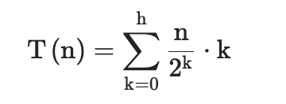
等比数列求和结果为 O(2n)，因此 T(n) = O(n)。
不同层级的调整次数：
-
高度为
1的节点：调整次数为1 × n/2。 -
高度为
2的节点：调整次数为2 × n/4。 -
总和为
n/2 + n/4 + n/8 + ... ≈ 2n⇒O(n)。
Java 原地建堆的算法实现如下：
public class HeapBuilder {
// 下沉操作（以最大堆为例）
private static void siftDown(int[] arr, int i, int n) {
while (i < n) {
int left = 2 * i + 1;
int right = 2 * i + 2;
int largest = i;
if (left < n && arr[left] > arr[largest]) {
largest = left;
}
if (right < n && arr[right] > arr[largest]) {
largest = right;
}
if (largest != i) {
// 交换元素
int temp = arr[i];
arr[i] = arr[largest];
arr[largest] = temp;
i = largest; // 继续下沉
} else {
break; // 调整完成
}
}
}
// 原地建堆
public static void buildHeap(int[] arr) {
int n = arr.length;
// 从最后一个非叶节点开始反向遍历
for (int i = n / 2 - 1; i >= 0; i--) {
siftDown(arr, i, n);
}
}
public static void main(String[] args) {
int[] arr = {3, 5, 1, 7, 2, 9, 4};
buildHeap(arr); // 结果: [9,7,4,5,3,1,2]
}
}
数据结构 树形 二叉树
层序换行遍历二叉树
层序遍历二叉树的思路是使用队列来实现。首先将根节点入队，然后进入循环，每次循环首先获取当前队列的大小，表示当前层的节点个数，然后依次取出这些节点，输出它们的值，并将它们的子节点（如果存在）依次入队。这样可以保证按层级顺序遍历二叉树，并在每一层输出换行符以区分层级。
class Solution {
public List<List<Integer>> levelOrder(TreeNode root) {
List<List<Integer>> ret = new ArrayList<List<Integer>>();
if (root == null) {
return ret;
}
Queue<TreeNode> queue = new LinkedList<TreeNode>();
queue.offer(root);
while (!queue.isEmpty()) {
List<Integer> level = new ArrayList<Integer>();
int currentLevelSize = queue.size();
for (int i = 1; i <= currentLevelSize; ++i) {
TreeNode node = queue.poll();
level.add(node.val);
if (node.left != null) {
queue.offer(node.left);
}
if (node.right != null) {
queue.offer(node.right);
}
}
ret.add(level);
}
return ret;
}
}
数据结构 树形 b树
数据结构 树形 b+树
排序
快排
快速排序是一种基于分治思想的高效排序算法，它的基本思路如下：
- 第一步选择基准值：从待排序的数组中选择一个元素作为基准值。这个基准值的选择方式有多种，常见的是选择数组的第一个元素、最后一个元素或者中间元素等。例如，我们可以简单地选择数组的第一个元素作为基准值。
-
第二步划分操作：通过一趟排序将待排序的数组分割成两部分，使得左边部分的所有元素都小于等于基准值，右边部分的所有元素都大于等于基准值。具体做法是设置两个指针，一个从数组的左边开始向右移动（通常称为
left指针），一个从数组的右边开始向左移动（通常称为right指针）。然后，从左到右找到第一个大于基准值的元素，从右到左找到第一个小于基准值的元素，交换这两个元素的位置。不断重复这个过程，直到left指针和right指针相遇，此时将基准值与相遇位置的元素交换，这样就完成了一次划分操作，确定了基准值在排序后数组中的正确位置。 - 第三步递归排序子数组：对划分后的左右两个子数组分别重复上述的选择基准值和划分操作，也就是递归地调用快速排序算法，直到子数组的长度为 1 或者 0（表示已经有序），此时整个数组就完成了排序。
以下是使用 Java 语言实现快速排序算法的代码：
public class QuickSort {
public static void quickSort(int[] arr, int low, int high) {
if (low < high) {
// 划分操作，获取基准值的最终位置索引
int pivotIndex = partition(arr, low, high);
// 对基准值左边的子数组进行递归排序
quickSort(arr, low, pivotIndex - 1);
// 对基准值右边的子数组进行递归排序
quickSort(arr, pivotIndex + 1, high);
}
}
private static int partition(int[] arr, int low, int high) {
int pivot = arr[low]; // 选择第一个元素作为基准值
int left = low + 1;
int right = high;
while (true) {
// 从左到右找到第一个大于基准值的元素
while (left <= right && arr[left] <= pivot) {
left++;
}
// 从右到左找到第一个小于基准值的元素
while (left <= right && arr[right] > pivot) {
right--;
}
if (left > right) {
break;
}
// 交换两个元素的位置
swap(arr, left, right);
}
// 将基准值与相遇位置的元素交换
swap(arr, low, right);
return right;
}
private static void swap(int[] arr, int i, int j) {
int temp = arr[i];
arr[i] = arr[j];
arr[j] = temp;
}
public static void main(String[] args) {
int[] arr = {5, 3, 8, 6, 7, 2};
quickSort(arr, 0, arr.length - 1);
for (int num : arr) {
System.out.print(num + " ");
}
}
}
在上述代码中：
-
quickSort方法是快速排序的主方法，它接收一个整数数组以及要排序的起始索引和结束索引。首先判断起始索引是否小于结束索引，如果是，则进行划分操作得到基准值的索引，然后分别对基准值左右两边的子数组进行递归调用quickSort方法。 -
partition方法实现了划分操作，按照前面描述的思路，通过双指针移动和元素交换来确定基准值的正确位置，并返回这个位置的索引。 -
swap方法用于交换数组中两个指定位置的元素，辅助partition方法完成元素的交换操作。
时间复杂度分析：
- 快速排序在平均情况下的时间复杂度是 O(nlogn），但在最坏的情况下（例如数组本身已经有序或者逆序，每次选择的基准值恰好是最大或者最小的元素），时间复杂度会退化为 O(n^2）。
- 快速排序的空间复杂度取决于递归调用的栈深度，在平均情况下，递归栈深度为 O(logn），所以空间复杂度为 O(logn）。在最坏情况下，递归栈深度为 O(n），空间复杂度则变为O(n）。
leetcode
设计模式
用double check实现单例模式
- 使用volatile关键字修饰 instance，防止指令重排序
- 加上同步代码块 保证线程安全（比同步方法高效，因为同步方法每次获取对象都会执行，同步代码块只在第一次获取对象时会执行，后期会直接返回对象信息）
public class SingleTon {
// volatile 关键字修饰变量 防止指令重排序
private static volatile SingleTon instance = null;
private SingleTon(){}
public static SingleTon getInstance(){
if(instance == null){
//同步代码块 只有在第一次获取对象的时候会执行到 ，第二次及以后访问时 instance变量均非null故不会往下执行了 直接返回啦
synchronized(SingleTon.class){
if(instance == null){
instance = new SingleTon();
}
}
}
return instance;
}
}
算法：在不引用第三个变量前提下使两个整数类型交换值
在 Java 中，可以通过多种方法在不使用第三个变量的情况下交换两个整数的值。以下是两种常用的方法：
1. 使用加法和减法
这种方法利用加法和减法的特性来交换两个值：
public class SwapExample {
public static void main(String[] args) {
int a = 5;
int b = 10;
System.out.println("Before Swap: a = " + a + ", b = " + b);
a = a + b; // 将 a 赋值为 a + b
b = a - b; // 将 b 赋值为原来的 a
a = a - b; // 将 a 赋值为原来的 b
System.out.println("After Swap: a = " + a + ", b = " + b);
}
}
注意：这种方法可能会导致溢出，如果 a 和 b 数值很大时，建议使用其他方法。
2、使用异或运算
使用位运算（异或运算）是一种更安全的交换两个值的方法：
public class SwapExample {
public static void main(String[] args) {
int a = 5;
int b = 10;
System.out.println("Before Swap: a = " + a + ", b = " + b);
a = a ^ b; // 步骤 1
b = a ^ b; // 步骤 2
a = a ^ b; // 步骤 3
System.out.println("After Swap: a = " + a + ", b = " + b);
}
}
解释：
-
a = a ^ b;现在a存储的是a和b的异或结果。 -
b = a ^ b;通过将b与新的a进行异或，得到原始的a值。 -
a = a ^ b;再次异或得到原始的b值。
sql 手撕题
表有如下字段student_id（学号）, score（成绩）,class（班级）
- 找出每个班中成绩最好的学生的学号
SELECT
class,
MAX(score) AS max_score,
student_id
FROM
student
GROUP BY
class;
常见哈希冲突有哪些解决方法？
- 链接法：使用链表或其他数据结构来存储冲突的键值对，将它们链接在同一个哈希桶中。
- 开放寻址法：在哈希表中找到另一个可用的位置来存储冲突的键值对，而不是存储在链表中。常见的开放寻址方法包括线性探测、二次探测和双重散列。
- 再哈希法：当发生冲突时，使用另一个哈希函数再次计算键的哈希值，直到找到一个空槽来存储键值对。
- 哈希桶扩容：当哈希冲突过多时，可以动态地扩大哈希桶的数量，重新分配键值对，以减少冲突的概率。
算法
最长不重复字符串子串（中等）
题目描述：给定一个字符串 s，请你找出其中不重复字符的最长子串的长度。
例如，对于字符串 "abcabcbb"，其不重复字符的最长子串是 "abc"，长度为 3；对于字符串 "bbbbb"，最长不重复子串是 "b"，长度为 1；对于字符串 "pwwkew"，最长不重复子串是 "wke"，长度为 3。
解题思路
可以使用滑动窗口的思想来解决这个问题，具体步骤如下：
1、定义数据结构和变量
-
使用一个哈希表（在 Java 中可以使用
HashMap）来记录字符出现的最新位置。键为字符，值为该字符在字符串中的索引位置。 -
定义两个指针，一个左指针
left和一个右指针right，分别表示滑动窗口的左右边界，初始时都指向字符串的开头（索引为0）。 -
定义一个变量
maxLength用于记录最长不重复子串的长度，初始值设为0。
2、滑动窗口移动过程
-
通过移动右指针
right不断扩大窗口，每次将右指针指向的字符加入窗口（即加入哈希表，并记录其位置）。 -
在加入字符时，检查该字符是否已经在哈希表中存在，且其上次出现的位置在当前窗口内（即上次出现位置大于等于左指针
left所指位置）。如果是这样，说明出现了重复字符，需要收缩窗口，将左指针left移动到该重复字符上次出现位置的下一个位置，以保证窗口内的字符都是不重复的。 -
在每次移动右指针
right后（无论是否进行了窗口收缩操作），计算当前窗口的长度（即right - left + 1），并更新maxLength的值，使其始终记录当前找到的最长不重复子串的长度。
3、遍历结束后返回结果
-
当右指针
right遍历完整个字符串后，maxLength中记录的值就是整个字符串中不重复字符的最长子串的长度，直接返回该值即可。
代码实现如下：
import java.util.HashMap;
import java.util.Map;
public class LongestSubstringWithoutRepeatingCharacters {
public static int lengthOfLongestSubstring(String s) {
if (s == null || s.length() == 0) {
return 0;
}
// 用于记录字符出现的最新位置，键为字符，值为索引位置
Map<Character, Integer> charMap = new HashMap<>();
int maxLength = 0;
int left = 0;
int right = 0;
// 移动右指针来扩大窗口
while (right < s.length()) {
char currentChar = s.charAt(right);
// 检查当前字符是否已在窗口内出现过（且上次出现位置在当前窗口内）
if (charMap.containsKey(currentChar) && charMap.get(currentChar) >= left) {
// 如果出现重复字符，收缩窗口，更新左指针位置
left = charMap.get(currentChar) + 1;
}
// 将当前字符加入哈希表，记录其最新位置
charMap.put(currentChar, right);
// 更新最长不重复子串的长度
maxLength = Math.max(maxLength, right - left + 1);
// 移动右指针，继续扩大窗口
right++;
}
return maxLength;
}
public static void main(String[] args) {
String s = "abcabcbb";
int result = lengthOfLongestSubstring(s);
System.out.println("最长不重复子串的长度为: " + result);
}
}
复杂度分析：
-
时间复杂度：O(n)，代码中最主要的操作是通过
while循环遍历字符串，右指针right从字符串开头逐步移动到字符串末尾，最多移动n次（n为字符串长度），所以这部分的时间复杂度主要取决于循环的次数，也就是字符串的长度n，因此时间复杂度为 O(n)。 - 空间复杂度：O(1)，我们只需要常数的空间存储若干变量。
一道sql，一张表存放四个班级的所有学生成绩，如何取出最高三人成绩？如何按照班级，取出每班最高三人成绩？
取出最高三人成绩的sql ：
SELECT *
FROM students
ORDER BY score DESC
LIMIT 3;
直接按成绩降序排序，取前 3 条记录。
取出每班最高三人成绩的sql：
SELECT s1.*
FROM students s1
WHERE (
SELECT COUNT(*)
FROM students s2
WHERE s2.class = s1.class AND s2.score > s1.score
) < 3
ORDER BY s1.class, s1.score DESC;
子查询统计每个班级中比当前学生成绩高的人数，如果人数 < 3，则当前学生为该班级前 3 名。
算法题
最长回文串 根据前序中序恢复二叉树字符串相加
解题思路：将两个字符串表示的数字看作是按位排列的数字，从低位（字符串末尾）开始逐位相加，同时考虑进位情况，就如同我们在纸上进行竖式加法运算一样。
代码实现：
#include <iostream>
#include <string>
using namespace std;
string addStrings(string num1, string num2) {
string result;
int i = num1.size() - 1, j = num2.size() - 1;
int carry = 0; // 进位
while (i >= 0 || j >= 0 || carry > 0) {
int n1 = i >= 0? num1[i--] - '0' : 0;
int n2 = j >= 0? num2[j--] - '0' : 0;
int sum = n1 + n2 + carry;
carry = sum / 10;
result.push_back(sum % 10 + '0');
}
return string(result.rbegin(), result.rend());
}
int main() {
string num1 = "123";
string num2 = "456";
string sum = addStrings(num1, num2);
cout << sum << endl;
return 0;
}
给一个整数，求其二进制1的个数，负数取补码
解题思路：通过循环对整数的每一位进行判断，利用位运算中的与运算（&）来检查当前位是否为 1。具体来说，将整数与 1 进行与运算，如果结果为 1，则表示当前最低位是 1，然后将整数右移一位，继续检查下一位，直到整数变为 0 为止。
代码实现：
#include <iostream>
using namespace std;
int countOnes(int num) {
int count = 0;
while (num!= 0) {
if (num & 1) {
count++;
}
num >>= 1;
}
return count;
}
int main() {
int num = -5;
int result = countOnes(num);
cout << "二进制表示中1的个数为: " << result << endl;
return 0;
}
- 翻转二叉树
- 给一个字符串清除特定字符前的所有字符
- 从左到右从上到下打印二叉树；
- 算法题：判断是否为平衡二叉树
- 一个二叉树，给一个target，找出大于这个树中的节点的最大深度。
- 最长回文子串
- 合并区间
常见的排序算法你知道哪些？
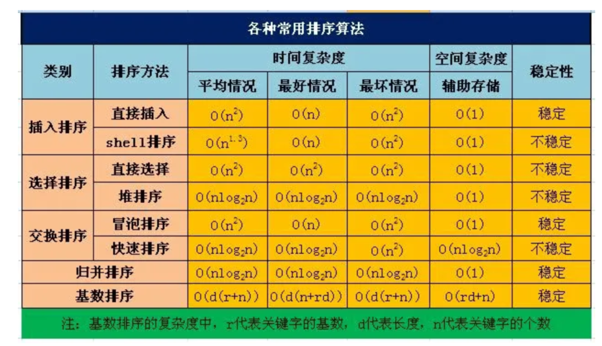
- 冒泡排序：通过相邻元素的比较和交换，每次将最大（或最小）的元素逐步“冒泡”到最后（或最前）。时间复杂度：最好情况下O(n)，最坏情况下O(n^2)，平均情况下O(n^2)。，空间复杂度：O(1)。
- 插入排序：将待排序元素逐个插入到已排序序列的合适位置，形成有序序列。时间复杂度：最好情况下O(n)，最坏情况下O(n^2)，平均情况下O(n^2)，空间复杂度：O(1)。
- 选择排序（Selection Sort）：通过不断选择未排序部分的最小（或最大）元素，并将其放置在已排序部分的末尾（或开头）。时间复杂度：最好情况下O(n^2)，最坏情况下O(n^2)，平均情况下O(n^2)，空间复杂度：O(1)。
- 快速排序（Quick Sort）：通过选择一个基准元素，将数组划分为两个子数组，使得左子数组的元素都小于（或等于）基准元素，右子数组的元素都大于（或等于）基准元素，然后对子数组进行递归排序。时间复杂度：最好情况下O(nlogn)，最坏情况下O(n^2)，平均情况下O(nlogn)，空间复杂度：最好情况下O(logn)，最坏情况下O(n)。
- 归并排序（Merge Sort）：将数组不断分割为更小的子数组，然后将子数组进行合并，合并过程中进行排序。时间复杂度：最好情况下O(nlogn)，最坏情况下O(nlogn)，平均情况下O(nlogn)。空间复杂度：O(n)。
- 堆排序（Heap Sort）：通过将待排序元素构建成一个最大堆（或最小堆），然后将堆顶元素与末尾元素交换，再重新调整堆，重复该过程直到排序完成。时间复杂度：最好情况下O(nlogn)，最坏情况下O(nlogn)，平均情况下O(nlogn)。空间复杂度：O(1)。
算法
- 反转字符串单词
动态规划算法可以大概讲一讲吗？
答：只讲了怎么做动态规划的题，不知道应该怎么讲原理
- 数组中和最接近目标值的三个数
-
数组最大的组合数{3,32,9,912} 组合成9912332
讲一下二叉树最近公共父节点算法
- 求数组的最大连续和。
算法
算法：字符串相乘
常见的队列有哪些及应用场景？
- 顺序队列是利用一组连续的存储单元依次存放从队头到队尾的元素，同时设置两个指针，一个指向队头元素的位置，称为队头指针；另一个指向队尾元素的下一个位置，称为队尾指针。实现简单，空间利用率低，当队尾指针到达数组末尾时，即使前面有空闲空间，也可能无法继续插入元素，造成假溢出。一些简单的、对队列操作不太频繁且数据量相对较小的场景，如学校食堂打饭排队系统，可简单模拟学生排队打饭的过程，新学生在队尾加入，打到饭的学生从队头离开。
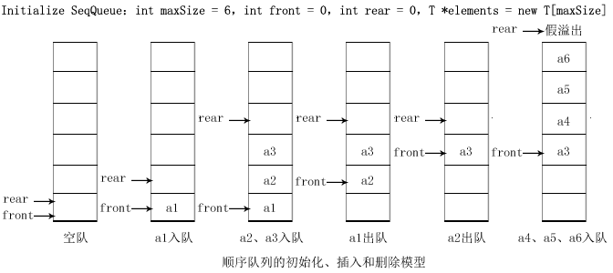
- 链式队列是通过链表来实现的队列，每个节点包含数据域和指针域，指针域指向下一个节点。队头指针指向链表的头节点，队尾指针指向链表的尾节点。插入和删除操作在链表的两端进行，不需要移动元素，操作效率高，可动态分配内存，不存在空间溢出问题，但需要额外的指针空间来存储节点之间的链接关系。常用于处理数据量不确定、需要频繁进行插入和删除操作的场景，如操作系统中的进程调度，新进程可以随时在队尾加入等待队列，就绪的进程从队头取出执行。
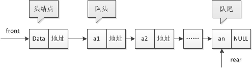
- 循环队列是把顺序队列的存储空间想象成一个首尾相接的圆环，当队尾指针到达数组末尾时，若数组头部还有空闲空间，则将队尾指针重新指向数组头部，继续插入元素。充分利用了数组的空间，避免了顺序队列中的假溢出问题，提高了空间利用率，但实现相对复杂一些，需要处理队头和队尾指针在循环时的特殊情况。常用于数据缓冲区的管理，如音频、视频数据的缓冲，数据以循环的方式存入缓冲区，消费端从队头取出数据进行处理，保证数据的连续和稳定。
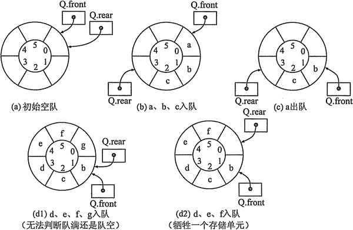
- 双端队列是一种特殊的队列，它允许在队列的两端进行插入和删除操作，既有队头指针又有队尾指针，两端都可以作为队头或队尾进行操作。具有很高的灵活性，可在两端快速插入和删除元素，支持多种操作模式，但实现相对复杂，需要更多的代码来维护两端的操作逻辑。在一些需要频繁在两端进行数据操作的场景中非常有用，如在浏览器的页面浏览历史记录中，用户可以向前和向后浏览页面，新访问的页面可以从队头或队尾插入，浏览过的页面可以从两端删除。
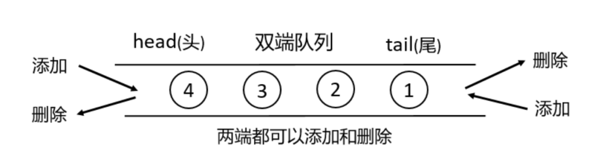
- 优先级队列中的每个元素都有一个优先级，在插入和删除元素时，会根据元素的优先级来进行操作，优先级高的元素先出队。通常使用堆等数据结构来实现，以保证高效的插入和删除操作。能够快速获取优先级最高（或最低）的元素并进行处理，插入和删除操作的时间复杂度通常为 O (log n)，其中 n 是队列中的元素个数。在任务调度系统中，不同任务可能具有不同的优先级，优先级高的任务需要优先执行，如操作系统中的进程调度，实时性要求高的进程具有较高的优先级，会优先被调度执行。
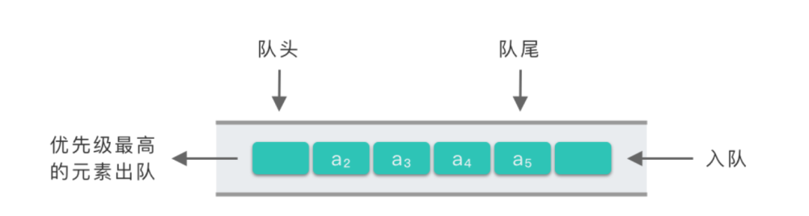
算法
- 在只有3种数的1000个数中快速排序？
- 一个长度为奇数的数组，快速确定中位数？
9. 算法手撕：字符串最大递增子串
要解决字符串最大递增子串问题，我们需要找到字符串中最长的字符严格递增的连续子串。这里的 "递增" 指的是字符的 ASCII 值严格递增。
下面是一个高效的 C++ 实现，时间复杂度为 O (n)，其中 n 是字符串的长度：
#include <iostream>
#include <string>
#include <algorithm>
using namespace std;
// 正确定义函数，移除多余的注释符
string longestIncreasingSubstring(const string& s) {
if (s.empty()) return"";
int maxLength = 1; // 最长递增子串的长度
int currentLength = 1; // 当前递增子串的长度
int start = 0; // 最长递增子串的起始索引
int currentStart = 0; // 当前递增子串的起始索引
for (int i = 1; i < s.length(); ++i) {
// 如果当前字符大于前一个字符，说明仍在递增
if (s[i] > s[i-1]) {
currentLength++;
} else {
// 检查当前递增子串是否是最长的
if (currentLength > maxLength) {
maxLength = currentLength;
start = currentStart;
}
// 重置当前递增子串
currentLength = 1;
currentStart = i;
}
}
// 最后一次检查，处理字符串结束时的递增子串
if (currentLength > maxLength) {
maxLength = currentLength;
start = currentStart;
}
// 返回最长递增子串
return s.substr(start, maxLength);
}
int main() {
string testStr1 = "abcabcdabcde";
string testStr2 = "abacdb";
string testStr3 = "zyxwvu";
string testStr4 = "a";
string testStr5 = "";
cout << "测试字符串1: " << testStr1 << endl;
cout << "最长递增子串: " << longestIncreasingSubstring(testStr1) << endl << endl;
cout << "测试字符串2: " << testStr2 << endl;
cout << "最长递增子串: " << longestIncreasingSubstring(testStr2) << endl << endl;
cout << "测试字符串3: " << testStr3 << endl;
cout << "最长递增子串: " << longestIncreasingSubstring(testStr3) << endl << endl;
cout << "测试字符串4: " << testStr4 << endl;
cout << "最长递增子串: " << longestIncreasingSubstring(testStr4) << endl << endl;
cout << "测试字符串5: " << testStr5 << endl;
cout << "最长递增子串: " << longestIncreasingSubstring(testStr5) << endl;
return0;
}
运行的效果：
测试字符串1: abcabcdabcde
最长递增子串: abcde
测试字符串2: abacdb
最长递增子串: acd
测试字符串3: zyxwvu
最长递增子串: z
测试字符串4: a
最长递增子串: a
测试字符串5:
最长递增子串:
这个算法的实现思路如下：
- 我们使用一次遍历的方式，时间复杂度为 O (n)，其中 n 是字符串的长度
- 算法维护两个变量对：1、currentLength 和 currentStart：跟踪当前正在检查的递增子串 ；2、maxLength 和 start：记录目前发现的最长递增子串
- 遍历过程中：当遇到字符递增时（当前字符 > 前一个字符），延长当前子串；当递增中断时，比较当前子串与最长子串，更新最长子串（如果需要）；遍历结束后，进行最后一次比较，确保没有遗漏最长子串
- 特殊情况处理：空字符串返回空；完全递减的字符串返回第一个字符；单字符字符串返回自身
该算法的时间复杂度为 O (n)，其中 n 是字符串的长度，因为算法只对字符串进行一次线性遍历（从第一个字符到最后一个字符），遍历过程中每个字符只被处理一次，没有嵌套循环或递归操作。所有操作（比较字符、更新计数器等）都是常数时间 O (1) 级别的，因此整体时间复杂度为线性级别。
空间复杂度是O (1)（常数级），因为算法仅使用了固定数量的额外变量（maxLength、currentLength、start、currentStart 等）来存储中间结果，这些变量的数量不随输入字符串的长度变化而变化。即使输入字符串非常长，额外占用的内存空间也保持不变，因此空间复杂度是常数级别的。
15. 算法
- 手撕快速排序算法
买卖股票的最佳时机II
平衡二叉树结构是怎么样的？
平衡二叉树是在二叉搜索树的基础上，平衡二叉树还需要满足如下条件:
- 左右两个子树的高度差（平衡因子）的绝对值不超过1
- 左右两个子树都是一棵平衡二叉树
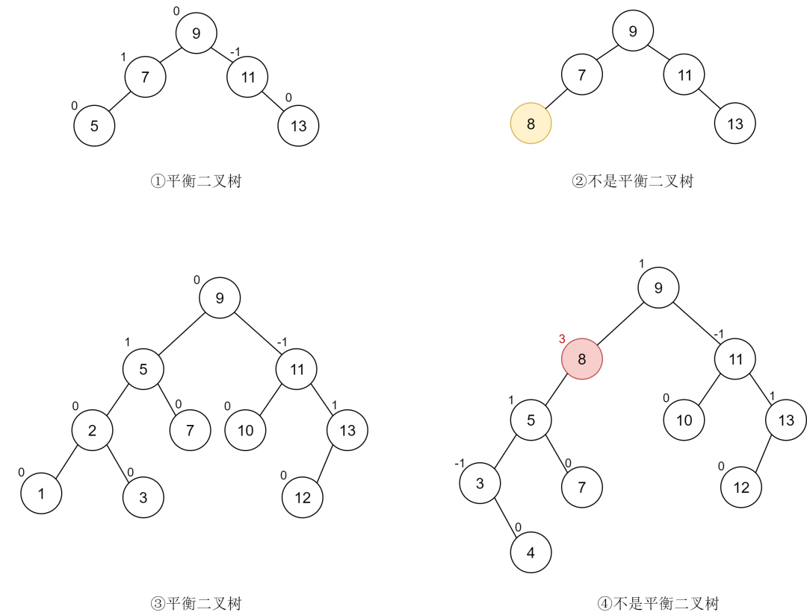
分析：
-
图一是一个平衡二叉树，它满足平衡二叉树的定义。
-
图二不是平衡二叉树，其原因并不是不满足平衡因子的条件，而是因为它不满足二叉搜索树的构成条件，这提醒我们平衡二叉树首先要是一棵二叉搜索树。
-
图三满足平衡二叉树的构成条件。
-
图 4 中的节点 (8) 平衡因子为 3，不满足平衡二叉树的要求。
堆是什么？
堆是一颗完全二叉树，这样实现的堆也被称为二叉堆。堆中节点的值都大于等于（或小于等于）其子节点的值，堆中如果节点的值都大于等于其子节点的值，我们把它称为大顶堆，如果都小于等于其子节点的值，我们将其称为小顶堆。
下图中，1，2 是大顶堆，3 是小顶堆， 4 不是堆（不是完全二叉树）
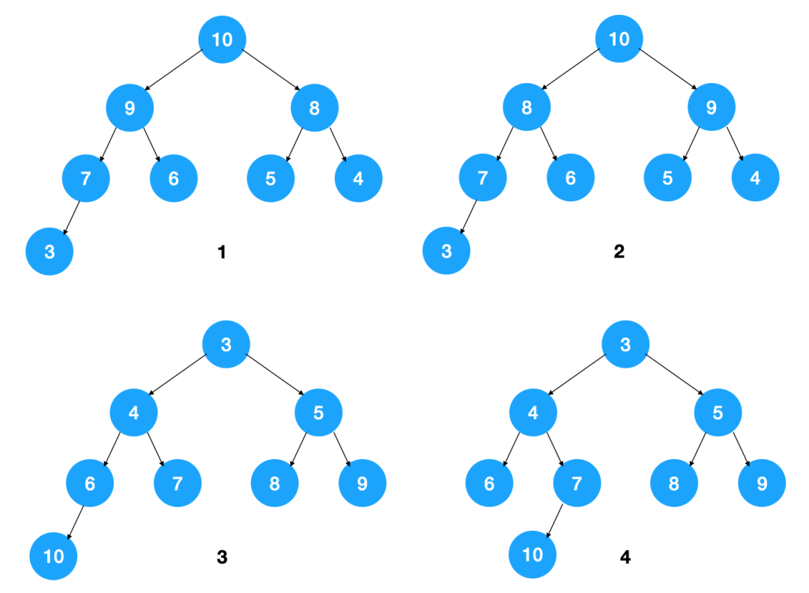
栈和队列，举个使用场景例子
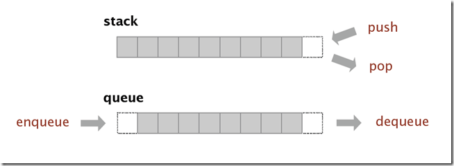
- 栈是一种后进先出（LIFO）的数据结构，函数的调用和返回往往使用栈来管理函数调用的顺序。
- 队列是一种先进先出（FIFO）的数据结构，类似于排队等待的队伍，先到的人会先被服务。队列常用于需要先进先出的场景，例如：在网络通信或磁盘读写等场景中，使用队列来管理数据的接收和发送顺序，以平衡生产者和消费者之间的速度差异。
- 手撕算法：寻找第k大元素
算法
两个算法手撕：
- 判断链表相交
- 求数字里面1的个数
算法：另一棵树的子树
- leetcode：572. 另一棵树的子树（简单）
- lc. 152 乘积最大子数组
- 算法题:找出图中所有的连通子图
- 链表倒数第k个值
- 算法：岛屿数量
- 算法：股票
- 力扣：乘积最大子数组
8. 手撕题：两个有序数组合并
要合并两个有序数组，可以使用双指针法高效实现，时间复杂度为 O (n+m)，空间复杂度为 O (n+m)。
import java.util.Arrays;
publicclass MergeSortedArrays {
publicstaticint[] merge(int[] arr1, int[] arr2) {
// 处理空数组情况
if (arr1 == null || arr1.length == 0) {
return arr2;
}
if (arr2 == null || arr2.length == 0) {
return arr1;
}
// 初始化指针和结果数组
int i = 0, j = 0, k = 0;
int[] result = newint[arr1.length + arr2.length];
// 比较两个数组的元素，取较小值放入结果数组
while (i < arr1.length && j < arr2.length) {
if (arr1[i] <= arr2[j]) {
result[k++] = arr1[i++];
} else {
result[k++] = arr2[j++];
}
}
// 处理剩余元素
while (i < arr1.length) {
result[k++] = arr1[i++];
}
while (j < arr2.length) {
result[k++] = arr2[j++];
}
return result;
}
public static void main(String[] args) {
// 测试示例
int[] arr1 = {1, 3, 5, 7};
int[] arr2 = {2, 4, 6, 8, 10};
int[] mergedArray = merge(arr1, arr2);
System.out.println("合并后的数组: " + Arrays.toString(mergedArray));
// 输出: 合并后的数组: [1, 2, 3, 4, 5, 6, 7, 8, 10]
}
}
执行结果：
合并后的数组: [1, 2, 3, 4, 5, 6, 7, 8, 10]
思路很简单：
- 分别为两个数组设置指针，从起始位置开始
- 比较两个指针指向的元素，取较小的元素放入结果数组
- 移动相应的指针，重复比较过程
- 处理剩余元素
这个实现的优点是只需要一次遍历两个数组，不需要额外的排序操作，充分利用了两个数组已经有序的特性。
- 算法：数组最大子串和
算法题：寻找峰值
给定一个输入数组nums，其中nums[i] != nums[i+1]，找到峰值元素并返回其索引。
数组可能包含多个峰值，在这种情况下，返回任何一个峰值所在位置即可。
你可以假设nums[-1]= nums[n]= -∞。
读者答：
- （1）遍历递增序列，遇到第一个非递增的位置返回，时间复杂度为O(n)。
- （2）寻找最大值，时间复杂度依旧为O(n)。
- （3）二分查找变体，在二分查找时，取中间位置m，并与它相邻位置m+1进行比较，如果m大于m+1，说明峰值应该在左侧，否则应该在右侧，移动对应的左右边界。
- Top K问题 如何实现热搜排行榜
- 追问：用大顶推还是小顶堆
- 追问：插入数据时结构变化
-
手撕 反转链表
15. 手撕：多线程打印1-100 按顺序
要实现多线程按顺序打印1-100，我们需要确保多个线程能够协同工作，按照正确的顺序输出数字。
使用synchronized和wait/notify的代码例子：
public class OrderedPrinting {
privatestaticint number = 1;
privatestaticfinal Object lock = new Object();
public static void main(String[] args) {
// 创建多个线程
for (int i = 0; i < 10; i++) {
new Thread(new Printer(i)).start();
}
}
staticclass Printer implements Runnable {
privatefinalint threadId;
public Printer(int threadId) {
this.threadId = threadId;
}
@Override
public void run() {
while (true) {
synchronized (lock) {
// 检查是否轮到自己打印
if (number > 100) {
break;
}
if (number % 10 == threadId ||
(threadId == 0 && number % 10 == 0)) {
System.out.println("Thread-" + threadId + ": " + number);
number++;
lock.notifyAll(); // 唤醒其他线程
} else {
try {
lock.wait(); // 不是自己的轮次，等待
} catch (InterruptedException e) {
Thread.currentThread().interrupt();
}
}
}
}
}
}
}
算法
- 组合总和
算法题
-
leetcode 3.无重复字符的最长子串（中等）
-
leetcode 88. 合并两个有序数组（简单）
11. 手撕算法：双向链表反转
迭代法：遍历链表，逐个反转 prev 和 next 指针。
public ListNode reverseDoublyLinkedList(ListNode head) {
if (head == null || head.next == null) {
return head;
}
ListNode prev = null;
ListNode current = head;
while (current != null) {
ListNode nextNode = current.next; // 保存下一个节点
current.next = prev; // 反转 next 指针
current.prev = nextNode; // 反转 prev 指针
prev = current; // 移动 prev
current = nextNode; // 移动 current
}
return prev; // 新的头节点
}
-
时间复杂度：
O(n)，遍历一次链表。 -
空间复杂度：
O(1)，仅用常数级额外空间。
- 最小覆盖子串
反转链表
通过迭代遍历链表，在遍历过程中改变链表节点指针的指向，将当前节点的next指针指向前一个节点，从而实现链表的反转。需要使用三个指针来辅助操作，分别指向当前节点、前一个节点和后一个节点。
class ListNode {
int val;
ListNode next;
ListNode(int val) {
this.val = val;
}
}
public class ReverseLinkedList {
public static ListNode reverseList(ListNode head) {
ListNode prev = null;
ListNode curr = head;
while (curr!= null) {
ListNode nextTemp = curr.next;
curr.next = prev;
prev = curr;
curr = nextTemp;
}
return prev;
}
}
在上述代码中：
-
prev初始化为null，代表反转后链表的末尾（也就是原链表的头节点反转后的前一个节点）。 -
curr初始化为原链表的头节点head，然后在循环中，先保存当前节点的下一个节点到nextTemp，接着将当前节点的next指针指向前一个节点prev，再更新prev和curr的值，继续下一轮循环，直到遍历完整个链表，最后返回prev，它就是反转后链表的头节点。
算法
- 算法：lc415字符串相加
链表和数组有什么区别？
-
访问效率：数组可以通过索引直接访问任何位置的元素，访问效率高，时间复杂度为O(1)，而链表需要从头节点开始遍历到目标位置，访问效率较低，时间复杂度为O(n)。
-
插入和删除操作效率：数组插入和删除操作可能需要移动其他元素，时间复杂度为O(n)，而链表只需要修改指针指向，时间复杂度为O(1)。
-
缓存命中率：由于数组元素在内存中连续存储，可以提高CPU缓存的命中率，而链表节点不连续存储，可能导致CPU缓存的命中率较低，频繁的缓存失效会影响性能。
-
应用场景：数组适合静态大小、频繁访问元素的场景，而链表适合动态大小、频繁插入、删除操作的场景
如何使用两个栈实现队列？
使用两个栈实现队列的方法如下：
-
准备两个栈，分别称为
stackPush和stackPop。 -
当需要入队时，将元素压入
stackPush栈。 -
当需要出队时，先判断
stackPop是否为空，如果不为空，则直接弹出栈顶元素；如果为空，则将stackPush中的所有元素依次弹出并压入stackPop中，然后再从stackPop中弹出栈顶元素作为出队元素。 -
当需要查询队首元素时，同样需要先将
stackPush中的元素转移到stackPop中，然后取出stackPop的栈顶元素但不弹出。 - 通过上述方法，可以实现用两个栈来模拟队列的先进先出（FIFO）特性。
这种方法的时间复杂度为O(1)的入队操作，均摊时间复杂度为O(1)的出队和查询队首元素操作。
以下是使用两个栈实现队列的Java代码示例：
import java.util.Stack;
class MyQueue {
private Stack<Integer> stackPush;
private Stack<Integer> stackPop;
public MyQueue() {
stackPush = new Stack<>();
stackPop = new Stack<>();
}
public void push(int x) {
stackPush.push(x);
}
public int pop() {
if (stackPop.isEmpty()) {
while (!stackPush.isEmpty()) {
stackPop.push(stackPush.pop());
}
}
return stackPop.pop();
}
public int peek() {
if (stackPop.isEmpty()) {
while (!stackPush.isEmpty()) {
stackPop.push(stackPush.pop());
}
}
return stackPop.peek();
}
public boolean empty() {
return stackPush.isEmpty() && stackPop.isEmpty();
}
}
// 测试代码
public class Main {
public static void main(String[] args) {
MyQueue queue = new MyQueue();
queue.push(1);
queue.push(2);
System.out.println(queue.peek()); // 输出 1
System.out.println(queue.pop()); // 输出 1
System.out.println(queue.empty()); // 输出 false
}
}
算法
- 合并两个有序数组
- 反转链表（偷笑）
数组和链表的区别？
- 访问效率：数组可以通过索引直接访问任何位置的元素，访问效率高，时间复杂度为O(1)，而链表需要从头节点开始遍历到目标位置，访问效率较低，时间复杂度为O(n)。
- 插入和删除操作效率：数组插入和删除操作可能需要移动其他元素，时间复杂度为O(n)，而链表只需要修改指针指向，时间复杂度为O(1)。
- 缓存命中率：由于数组元素在内存中连续存储，可以提高CPU缓存的命中率，而链表节点不连续存储，可能导致CPU缓存的命中率较低，频繁的缓存失效会影响性能。
- 应用场景：数组适合静态大小、频繁访问元素的场景，而链表适合动态大小、频繁插入、删除操作的场景
算法
- m×n个格子，从左上角到右下角有几种方式
手撕代码
- 求字符串最长不包含相同字母的子串的长度
-
打印圣诞树
-
每隔1s调用一个会panic然后之后会recover的函数
- 给定一个公式，求 1 到 n 中满足条件的最大值，简单的模拟保存最大值
- 实现简单线程池
- 算法：单词拆分
- 找出一些数中第二大数
前缀树是什么？有什么应用？
前缀树（Trie Tree），也称为字典树、单词查找树或键树，是一种树形数据结构。它的核心思想是利用字符串的公共前缀来减少查询时间，最大限度地减少无谓的字符串比较，从而提高查询效率。
前缀树的特点是：
- 根节点不包含字符：除根节点外的每一个节点都包含一个字符。
- 从根节点到某一节点：路径上经过的字符连接起来，即为该节点对应的字符串。
- 每个节点的所有子节点包含的字符都不相同。
假设我们有字符串集合 {"apple", "apricot", "banana", "cherry"}，构建的前缀树结构大致如下：
root
/ | \
a b c
/ | \
p a h
/ / \
p n e
/ / \
l a r
\ / \
e t r
/
r
前缀树的应用场景：
- 字符串检索：比如在搜索引擎的搜索框中，当用户输入部分关键词时，搜索引擎可以利用前缀树快速找到以该关键词为前缀的所有相关词条，实现自动补全功能。又比如将所有正确的单词存储在前缀树中，当用户输入一个单词时，通过在前缀树中查找该单词是否存在，来判断其拼写是否正确。
- 路由表匹配：在网络路由中，路由器需要根据 IP 地址的前缀来选择合适的路由。前缀树可以高效地实现 IP 地址的最长前缀匹配，从而快速确定数据包的转发路径。
- 词频统计：可以将文本中的所有单词插入到前缀树中，同时在节点中记录每个单词的出现次数。通过遍历前缀树，可以统计出文本中每个单词的词频。
11. 手撕算法
- 合并k个有序链表，时间复杂度
算法
-
写一个快速排序算法
-
leetcode 题：k个一组，反转链表
堆排序算法原理，稳定吗
如果每个节点大于等于子树中的每个节点，我们称之为大顶堆，小于等于子树中的每个节点，我们则称之为小顶堆。
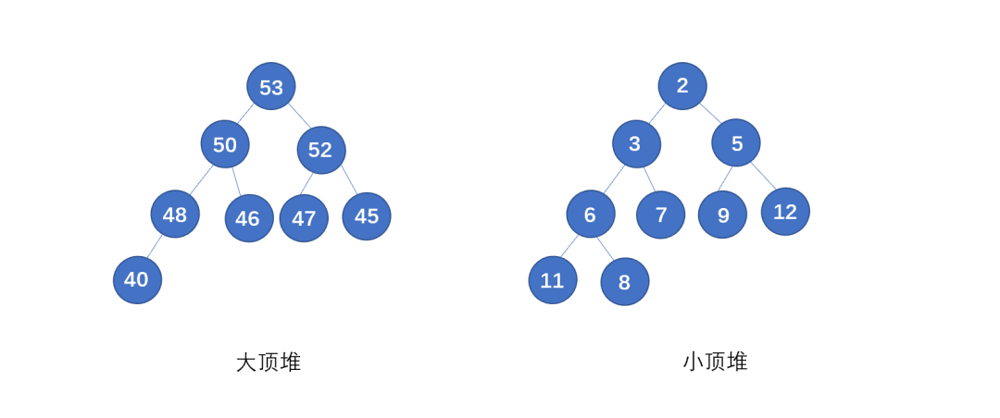
堆的要求：
- 必须是完全二叉树
- 堆中的每一个节点，都必须大于等于（或小于等于）其子树中每个节点的值。
堆通常是使用一维数组进行保存，节省空间，不需要存左右子节点的指针，通过下标就可定位左右节点和父节点。在起始位置为0的数组中：
- 父节点 i 的左子节点在(2i+1)的位置
- 父节点 i 的右子节点在(2i+2)的位置
- 子节点 i 的父节点在(i-1)/2向下取整的位置
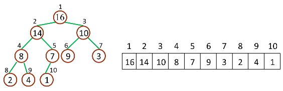
我们可以把堆排序的过程大致分为两大步骤，分别是建堆和排序。
- 建堆：建堆操作就是将一个无序的数组转化为最大堆的操作，首先将数组原地建一个堆。“原地”的含义就是不借助另一个数组，就在原数组上操作。我们的实现思路是从后往前处理数据，并且每个数据都是从上向下调整。
- 排序：建堆结束后，数组中的数据已经按照大顶堆的特性进行组织了，数组中的第一个元素就是堆顶，也就是最大的元素。我们把它和最后一个元素交换，那最大的元素就放到了下标为n的位置，时末尾元素就是最大值，将剩余元素重新堆化成一个大顶堆。继续重复这些步骤，直至数组有序排列
假设我们有一个数组 [4, 10, 3, 5, 1]，堆排序的过程如下：
- 构建最大堆：[10, 5, 3, 4, 1]
- 交换堆顶元素与最后一个元素：[1, 5, 3, 4, 10]
- 调整剩余元素为堆：[5, 4, 3, 1]
- 再次交换堆顶元素与最后一个元素：[1, 4, 3, 5]
- 调整剩余元素为堆：[4, 3, 1]
- 继续上述过程直到排序完成：[1, 3, 4, 5, 10]
算法实现：
public class HeapSort {
// 堆排序方法
public static void heapSort(int[] arr) {
int n = arr.length;
// 构建堆（重新排列数组）
for (int i = n / 2 - 1; i >= 0; i--) {
heapify(arr, n, i);
}
// 依次从堆中提取元素
for (int i = n - 1; i > 0; i--) {
// 将当前根节点移动到末尾
int temp = arr[0];
arr[0] = arr[i];
arr[i] = temp;
// 在堆中调整
heapify(arr, i, 0);
}
}
// 通过索引i对数组arr的前n个元素进行堆调整
private static void heapify(int[] arr, int n, int i) {
int largest = i; // 初始化最大值索引
int left = 2 * i + 1; // 左孩子节点
int right = 2 * i + 2; // 右孩子节点
// 如果左孩子大于根节点
if (left < n && arr[left] > arr[largest]) {
largest = left;
}
// 如果右孩子大于当前最大值
if (right < n && arr[right] > arr[largest]) {
largest = right;
}
// 如果最大值不是根节点
if (largest != i) {
int swap = arr[i];
arr[i] = arr[largest];
arr[largest] = swap;
// 递归调整受影响的子树
heapify(arr, n, largest);
}
}
public static void main(String[] args) {
int[] arr = {4, 10, 3, 5, 1};
heapSort(arr);
System.out.println("排序后的数组:");
for (int i : arr) {
System.out.print(i + " ");
}
}
}
现在我们来分析一下堆排序的时间复杂度、空间复杂度以及稳定性。
- 整个堆排序的过程中，只需要个别的临时存储空间，所以堆排序是原地排序算法。
- 堆排序包括建堆和排序两个操作，建堆的时间复杂度是O(n)，排序过程时间复杂度是O(nlogN)。所以，**堆排序的整个时间复杂度是O(nlogN)**。
- 因为在排序的过程中，存在将堆的最后一个节点跟堆顶互换的操作，所以有可能会改变值相同数据的原始相对顺序，所以堆排序不是稳定的排序算法。例如，假设我们有两个相同的元素A和B，且A在B前面。在构建和调整堆的过程中，B可能被移动到A的前面，从而破坏了它们原来的相对顺序。
什么是排序稳定性？
排序算法的稳定性是指在排序过程中，当有多个具有相同关键字的元素时，这些元素在排序后的序列中保持它们原有的相对顺序。
换句话说，如果两个元素有相同的键值，那么在排序前，如果第一个元素在第二个元素之前，排序后第一个元素也应该在第二个元素之前。
具体来说，对于一个序列中的两个元素A和B，如果A和B的键值相同，且在排序前A在B之前，那么在排序后A仍然应该在B之前，算法才能被称为是稳定的。例如，考虑一个包含姓名和年龄的列表：
[("Alice", 25), ("Bob", 25), ("Charlie", 20)]
如果排序算法是稳定的，那么在按年龄排序后，"Alice"和"Bob"的相对顺序不会改变：
[("Charlie", 20), ("Alice", 25), ("Bob", 25)]
但如果排序算法不稳定，"Alice"和"Bob"的相对顺序可能会在排序后改变：
[("Charlie", 20), ("Bob", 25), ("Alice", 25)]
在这种情况下，排序算法就被认为是不稳定的。
算法
- 判断两个字符串是否存在包含关系（在纸上手撕）
手撕：链表删除
class ListNode {
int val;
ListNode next;
ListNode(int x) {
val = x;
}
}
public class LinkedListDeletion {
public ListNode deleteNode(ListNode head, int val) {
if (head == null) {
return null;
}
if (head.val == val) {
return head.next;
}
ListNode prev = head;
ListNode curr = head.next;
while (curr != null) {
if (curr.val == val) {
prev.next = curr.next;
break;
}
prev = curr;
curr = curr.next;
}
return head;
}
}
手撕：二分查找
public int binarySearch(int[] arr, int target) {
int low = 0;
int high = arr.length - 1;
while (low <= high) {
int mid = low + (high - low) / 2;
if (arr[mid] == target) {
return mid;
} else if (arr[mid] < target) {
low = mid + 1;
} else {
high = mid - 1;
}
}
return -1; // target not found
}
算法
- 请在15分钟内完成“最长公共子串”编程题，输入为字符串数组，输出为最长公共子串
- 合并K个有序数组
- K个一组反转链表
- 二分查找（2 题）
- 洗牌算法
- 最大子数组和
- 手撕单例模式
- 算法：找到第K大的数
- 子串问题（一个只有abc的字符串，找出最短的满足a数量大于b数量，a数量大于c数量的子字符串）
- 二叉树最大深度（必须写层次遍历+写case测试）
- 白板推二分查找平均时间复杂度的公式
- 讲讲快排时间复杂度和跳表时间复杂度推理不一样的地方
- 算法题：合并两个有序链表（力扣原题）
说一下常见排序算法的时间复杂度？
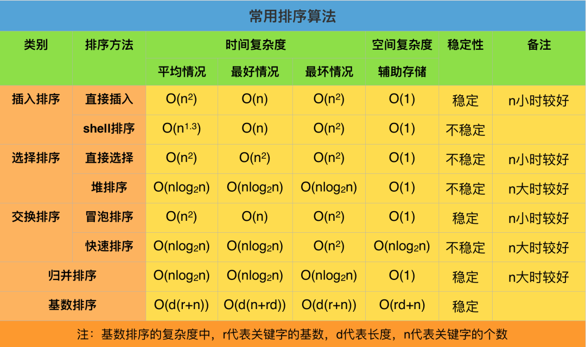
- 冒泡排序：通过相邻元素的比较和交换，每次将最大（或最小）的元素逐步“冒泡”到最后（或最前）。时间复杂度：最好情况下O(n)，最坏情况下O(n^2)，平均情况下O(n^2)，空间复杂度：O(1)。
- 插入排序：将待排序元素逐个插入到已排序序列的合适位置，形成有序序列。时间复杂度：最好情况下O(n)，最坏情况下O(n^2)，平均情况下O(n^2)，空间复杂度：O(1)。
- 选择排序：通过不断选择未排序部分的最小（或最大）元素，并将其放置在已排序部分的末尾（或开头）。时间复杂度：最好情况下O(n^2)，最坏情况下O(n^2)，平均情况下O(n^2)，空间复杂度：O(1)。
- 快速排序）：通过选择一个基准元素，将数组划分为两个子数组，使得左子数组的元素都小于（或等于）基准元素，右子数组的元素都大于（或等于）基准元素，然后对子数组进行递归排序。时间复杂度：最好情况下O(nlogn)，最坏情况下O(n^2)，平均情况下O(nlogn)，空间复杂度：最好情况下O(logn)，最坏情况下O(n)。
- 归并排序：将数组不断分割为更小的子数组，然后将子数组进行合并，合并过程中进行排序。时间复杂度：最好情况下O(nlogn)，最坏情况下O(nlogn)，平均情况下O(nlogn)。空间复杂度：O(n)。
- 堆排序：通过将待排序元素构建成一个最大堆（或最小堆），然后将堆顶元素与末尾元素交换，再重新调整堆，重复该过程直到排序完成。时间复杂度：最好情况下O(nlogn)，最坏情况下O(nlogn)，平均情况下O(nlogn)。空间复杂度：O(1)。
介绍一下快排的原理
快排使用了分治策略的思想，所谓分治，顾名思义，就是分而治之，将一个复杂的问题，分成两个或多个相似的子问题，在把子问题分成更小的子问题，直到更小的子问题可以简单求解，求解子问题，则原问题的解则为子问题解的合并。
快排的过程简单的说只有三步：
- 首先从序列中选取一个数作为基准数
-
将比这个数大的数全部放到它的右边，把小于或者等于它的数全部放到它的左边 （一次快排
partition） - 然后分别对基准的左右两边重复以上的操作，直到数组完全排序
具体按以下步骤实现：
- 1，创建两个指针分别指向数组的最左端以及最右端
- 2，在数组中任意取出一个元素作为基准
- 3，左指针开始向右移动，遇到比基准大的停止
- 4，右指针开始向左移动，遇到比基准小的元素停止，交换左右指针所指向的元素
- 5，重复3，4，直到左指针超过右指针，此时，比基准小的值就都会放在基准的左边，比基准大的值会出现在基准的右边
- 6，然后分别对基准的左右两边重复以上的操作，直到数组完全排序
注意这里的基准该如何选择？最简单的一种做法是每次都是选择最左边的元素作为基准，但这对几乎已经有序的序列来说，并不是最好的选择，它将会导致算法的最坏表现。还有一种做法，就是选择中间的数或通过 Math.random() 来随机选取一个数作为基准。
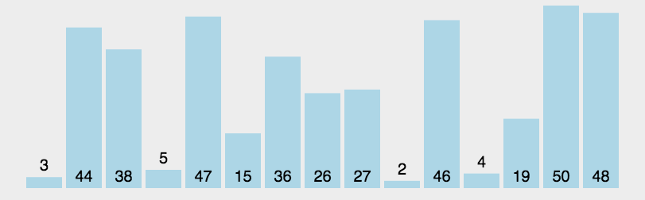
代码实现：
public class QuickSort {
// 快速排序算法
public void quickSort(int[] arr, int low, int high) {
if (low < high) {
int pi = partition(arr, low, high);
// 递归排序左半部分
quickSort(arr, low, pi - 1);
// 递归排序右半部分
quickSort(arr, pi + 1, high);
}
}
// 划分函数，用于找到基准元素的正确位置
int partition(int[] arr, int low, int high) {
int pivot = arr[high]; // 选择最后一个元素作为基准
int i = low - 1; // 初始化较小元素的索引
for (int j = low; j < high; j++) {
if (arr[j] < pivot) {
i++;
// 交换元素
int temp = arr[i];
arr[i] = arr[j];
arr[j] = temp;
}
}
// 将基准元素放到正确的位置
int temp = arr[i + 1];
arr[i + 1] = arr[high];
arr[high] = temp;
return i + 1; // 返回基准元素的位置
}
public static void main(String[] args) {
int[] arr = {10, 7, 8, 9, 1, 5};
QuickSort quickSort = new QuickSort();
quickSort.quickSort(arr, 0, arr.length - 1);
System.out.println("Sorted array:");
for (int value : arr) {
System.out.print(value + " ");
}
}
}
介绍一下冒泡排序的实现原理
冒泡排序会重复地遍历要排序的数列，一次比较两个元素，如果他们的顺序错误就把他们交换过来。遍历数列的工作是重复地进行直到没有再需要交换，也就是说该数列已经排序完成。
冒泡排序的实现原理如下：
- 比较相邻的元素：从第一个元素开始，比较相邻的两个元素。如果第一个元素比第二个元素大（或小），则交换这两个元素的位置。
- 多次遍历：持续遍历列表，直到没有更多的元素需要交换。此时，最大的元素（或最小的元素）会“浮”到列表的一端。
- 继续此过程：这个过程一直重复直到整个列表都被排序。随着列表中最大的元素被移到正确的位置（在列表的一端），然后再次进行完整的遍历以移动下一个最大（或最小）的元素。
这个过程的关键是每一步都将当前未排序的部分的最大（或最小）元素移动到其正确的位置。这样在每一次迭代中，最小的（或最大的）元素会被"冒泡"到正确的位置，这也是这种算法被称为冒泡排序的原因。冒泡排序的时间复杂度是O(n^2)，其中n是待排序的元素数量。这是因为它需要进行两层嵌套循环，外层循环控制排序的轮数，内层循环则是用来在每一轮中进行元素的比较和交换。最坏情况下和平均情况下，都需要遍历整个列表两次，所以是O(n^2)。然而，冒泡排序的最好情况（即输入数组已经是有序的）时间复杂度是O(n)，但在实际应用中这种情况较为少见。因此，通常认为冒泡排序的时间复杂度为O(n^2)。
- 算法：一个数组，求所有连续子数组里的子子数组的最小值的和
知道哪些排序算法，时间复杂度

- 冒泡排序：通过相邻元素的比较和交换，每次将最大（或最小）的元素逐步“冒泡”到最后（或最前）。时间复杂度：最好情况下O(n)，最坏情况下O(n^2)，平均情况下O(n^2)。，空间复杂度：O(1)。
- 插入排序：将待排序元素逐个插入到已排序序列的合适位置，形成有序序列。时间复杂度：最好情况下O(n)，最坏情况下O(n^2)，平均情况下O(n^2)，空间复杂度：O(1)。
- 选择排序：通过不断选择未排序部分的最小（或最大）元素，并将其放置在已排序部分的末尾（或开头）。时间复杂度：最好情况下O(n^2)，最坏情况下O(n^2)，平均情况下O(n^2)。空间复杂度：O(1)。
- 快速排序：通过选择一个基准元素，将数组划分为两个子数组，使得左子数组的元素都小于（或等于）基准元素，右子数组的元素都大于（或等于）基准元素，然后对子数组进行递归排序。时间复杂度：最好情况下O(nlogn)，最坏情况下O(n^2)，平均情况下O(nlogn)。空间复杂度：最好情况下O(logn)，最坏情况下O(n)。
- 归并排序：将数组不断分割为更小的子数组，然后将子数组进行合并，合并过程中进行排序。时间复杂度：最好情况下O(nlogn)，最坏情况下O(nlogn)，平均情况下O(nlogn)。空间复杂度：O(n)。
- 堆排序：通过将待排序元素构建成一个最大堆（或最小堆），然后将堆顶元素与末尾元素交换，再重新调整堆，重复该过程直到排序完成。时间复杂度：最好情况下O(nlogn)，最坏情况下O(nlogn)，平均情况下O(nlogn)。空间复杂度：O(1)。
归并排序和快速排序的使用场景
- 归并排序是稳定排序算法，适合排序稳定的场景；
- 快速排序是不稳定排序算法，不适合排序稳定的场景，快速排序是目前基于比较的内部排序中被认为是最好的方法，当待排序的关键字是随机分布时，快速排序的平均时间最短；
排序稳定是什么意思？
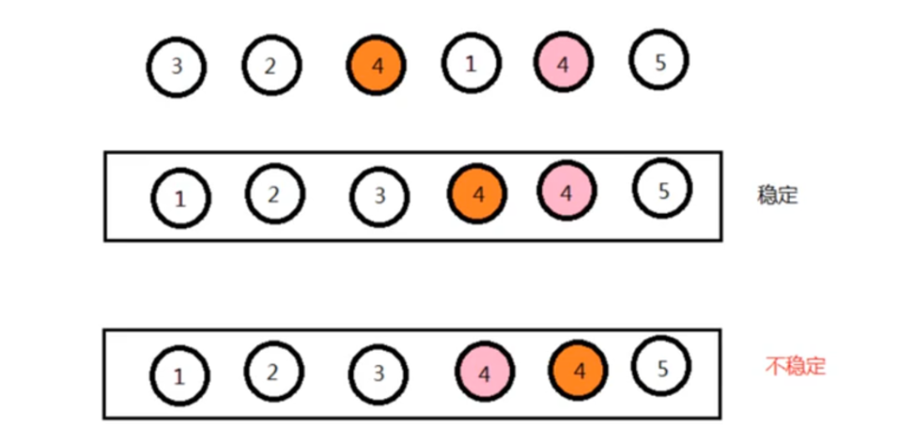
排序稳定指的是在排序过程中，对于具有相同排序关键字的元素，在排序后它们的相对位置保持不变。
换句话说，如果在排序前两个元素 A 和 B 的值相等，并且 A 在 B 的前面，那么在排序后 A 仍然在 B 的前面，这样的排序就是稳定排序。稳定排序保持了相同元素之间的顺序关系，适用于需要保持原始顺序的场景。
稳定和不稳定排序算法有什么特点？
稳定排序算法的特点：
- 相同元素的相对位置不会改变，排序后仍然保持原始顺序。
- 适用于需要保持元素间相对顺序关系的场景，如按照年龄排序后按姓名排序。
不稳定排序算法的特点：
- 相同元素的相对位置可能会改变，排序后不保证原始顺序。
- 可能会更快，但不适用于需要保持元素间相对顺序关系的场景。
-
手撕：字符串乘法，输出 2 的 1000 次方
-
反问：流程，业务
1. 栈结构和队列结构的区别是什么？
主要区别在于元素的插入和删除方式以及元素的访问顺序。
插入和删除方式：
- 队列：队列采用先进先出（FIFO）的方式，即新元素插入队尾，删除操作发生在队首。
- 栈：栈采用后进先出（LIFO）的方式，即新元素插入栈顶，删除操作也发生在栈顶。
元素的访问顺序：
- 队列：队列的元素按照插入的顺序进行访问，先插入的元素先被访问到。
- 栈：栈的元素按照插入的顺序进行访问，但是最后插入的元素先被访问到。
队列适用于需要按照插入顺序进行处理的场景，例如任务调度；
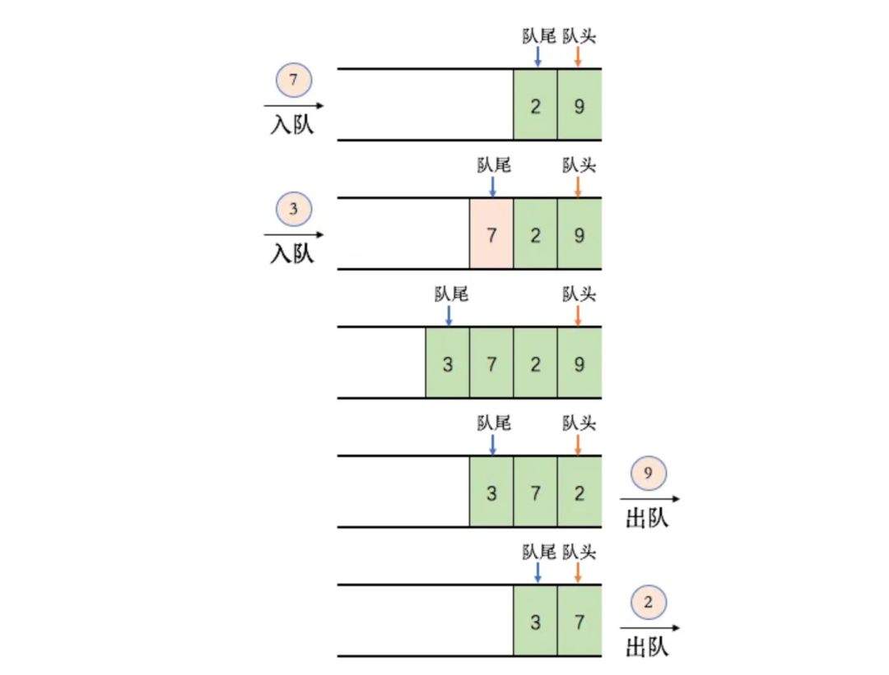
而栈适用于需要维护最近操作状态的场景，例如函数调用。
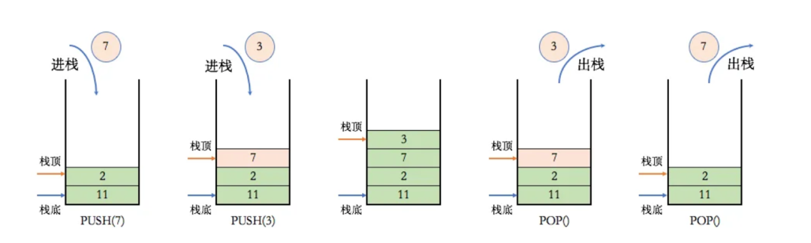
9. 算法题
- 包含min函数的栈
快速排序最坏复杂度，最坏是什么情况
快速排序是一种不稳定排序，它的时间复杂度为O(n·lgn)，最坏情况为O(n2)；空间复杂度为O(n·lgn)
快速排序最坏的情况还得看枢轴（pivot）的选择策略。在快速排序的早期版本中呢，最左面或者是最右面的那个元素被选为枢轴，那最坏的情况就会在下面的情况下发生啦：
- 数组已经是正序（same order）排过序的。
- 数组已经是倒序排过序的。
- 所有的元素都相同（1、2的特殊情况）
因为这些案例在用例中十分常见，所以这个问题可以通过要么选择一个随机的枢轴，或者选择一个分区中间的下标作为枢轴，或者（特别是对于相比更长的分区）选择分区的第一个、中间、最后一个元素的中值作为枢轴。
有了这些修改，那快排的最差的情况就不那么容易出现了，但是如果输入的数组最大（或者最小元素）被选为枢轴，那最坏的情况就又来了。
冒泡排序最坏复杂度，最好情况？
- 冒泡排序的最好时间复杂度出现在以下情况：当待排序数组已经有序时，即每个元素都比其前面的元素小，那么在第一次遍历数组时就可以确定排序已经完成，因此时间复杂度为O(n)。
- 冒泡排序的时间复杂度为O(n^2)。因为在排序过程中，需要进行多次遍历和元素交换，而每次遍历都需要比较相邻的元素并决定是否进行交换，这种操作需要花费O(n)的时间。因此，冒泡排序的时间复杂度通常为O(n^2)。
- 单链表删除重复元素
二叉树层序遍历
可以使用队列来实现，下面是一个用 C++ 编写的二叉树层序遍历的示例代码。该实现使用了标准库中的队列（std::queue）来完成层序遍历。
#include <iostream>
#include <queue>
using namespace std;
// 定义二叉树节点结构
struct TreeNode {
int val;
TreeNode* left;
TreeNode* right;
TreeNode(int x) : val(x), left(nullptr), right(nullptr) {}
};
// 层序遍历函数
void levelOrderTraversal(TreeNode* root) {
if (root == nullptr) {
return;
}
queue<TreeNode*> q; // 使用 std::queue 来实现队列
q.push(root); // 将根节点入队
while (!q.empty()) {
TreeNode* current = q.front(); // 取出队列的前端节点
q.pop(); // 出队
cout << current->val << " "; // 访问当前节点
// 将左子树和右子树入队
if (current->left != nullptr) {
q.push(current->left);
}
if (current->right != nullptr) {
q.push(current->right);
}
}
}
11. 手撕算法
- 返回链表的倒数第k个节点
手撕算法
- 题目：最长回文字符串
三数之和 No.15
class Solution {
public:
vector<vector<int>> threeSum(vector<int>& nums) {
//先排序
sort(nums.begin(), nums.end());
//插入到hashmap
unordered_map<int,int> map;
for(int i = 0;i < nums.size(); ++i) {
//insert插入重复的元素会失败
//map.insert(pair<int, int>(nums[i], i));
//直接插入，重复的元素不会失败，而是直接更新value
map[nums[i]] = i;
}
vector<vector<int>> resutl;
for(int i = 0;i < nums.size(); ++i) {
//去处重复的a结果
if(i != 0 && nums[i] == nums[i-1])
continue;
int a = nums[i];
for(int j = i+1;j < nums.size(); ++j) {
//去处重复的b结果
if(j != i+1 && nums[j] == nums[j-1])
continue;
int b = nums[j];
int c = -1*(b+a);
auto itor = map.find(c);
if(itor != map.end()) {
int k = itor->second;
//去处重复的c结果
if(k > j) {
resutl.push_back(vector<int>{a,b,c});
}
}
}
}
return resutl;
}
};
接雨水 No.42
单调栈解法：
class Solution {
public:
int trap(vector<int>& height) {
int ans = 0;
stack<int> stk;
int n = height.size();
for (int i = 0; i < n; ++i) {
while (!stk.empty() && height[i] > height[stk.top()]) {
int top = stk.top();
stk.pop();
if (stk.empty()) {
break;
}
int left = stk.top();
int currWidth = i - left - 1;
int currHeight = min(height[left], height[i]) - height[top];
ans += currWidth * currHeight;
}
stk.push(i);
}
return ans;
}
};
15. 哈希算法和加密算法的区别是什么？
- 哈希算法：也被叫做散列算法，它把任意长度的输入数据通过特定的哈希函数转换为固定长度的输出，这个输出值就是哈希值，也称为摘要。哈希函数是确定性的，相同的输入始终会产生相同的输出，并且计算过程是单向的，很难从哈希值反向推导出原始输入数据。常见的哈希算法有 MD5、SHA - 1、SHA - 256 等
- 加密算法：是将明文数据经过特定的加密密钥和加密算法转换为密文，在需要的时候，再使用对应的解密密钥和解密算法将密文还原为明文。加密过程是可逆的，前提是拥有正确的密钥。加密算法分为对称加密算法和非对称加密算法。对称加密算法如 DES、AES，加密和解密使用相同的密钥；非对称加密算法如 RSA、ECC，使用公钥加密，私钥解密。
22. 算法
- 手撕：数字转罗马数字
排序算法介绍一下？
- 冒泡排序：通过相邻元素的比较和交换，每次将最大（或最小）的元素逐步“冒泡”到最后（或最前）。时间复杂度：最好情况下O(n)，最坏情况下O(n^2)，平均情况下O(n^2)。，空间复杂度：O(1)。
- 插入排序：将待排序元素逐个插入到已排序序列的合适位置，形成有序序列。时间复杂度：最好情况下O(n)，最坏情况下O(n^2)，平均情况下O(n^2)，空间复杂度：O(1)。
- 选择排序（Selection Sort）：通过不断选择未排序部分的最小（或最大）元素，并将其放置在已排序部分的末尾（或开头）。时间复杂度：最好情况下O(n^2)，最坏情况下O(n^2)，平均情况下O(n^2)，空间复杂度：O(1)。
- 快速排序（Quick Sort）：通过选择一个基准元素，将数组划分为两个子数组，使得左子数组的元素都小于（或等于）基准元素，右子数组的元素都大于（或等于）基准元素，然后对子数组进行递归排序。时间复杂度：最好情况下O(nlogn)，最坏情况下O(n^2)，平均情况下O(nlogn)，空间复杂度：最好情况下O(logn)，最坏情况下O(n)。
- 归并排序（Merge Sort）：将数组不断分割为更小的子数组，然后将子数组进行合并，合并过程中进行排序。时间复杂度：最好情况下O(nlogn)，最坏情况下O(nlogn)，平均情况下O(nlogn)。空间复杂度：O(n)。
- 堆排序（Heap Sort）：通过将待排序元素构建成一个最大堆（或最小堆），然后将堆顶元素与末尾元素交换，再重新调整堆，重复该过程直到排序完成。时间复杂度：最好情况下O(nlogn)，最坏情况下O(nlogn)，平均情况下O(nlogn)。空间复杂度：O(1)。
大文件排序应该怎么办？
可以采用外部排序的方式。外部排序主要分为两个阶段：
1. 分段排序（生成初始归并段）：将大文件分割成多个较小的片段，这些片段的大小要能够适应内存的限制，接着把每个片段加载到内存中，使用内部排序算法（如快速排序、归并排序等）对其进行排序，最后将排序好的片段写回到磁盘中，这些片段就被称为初始归并段。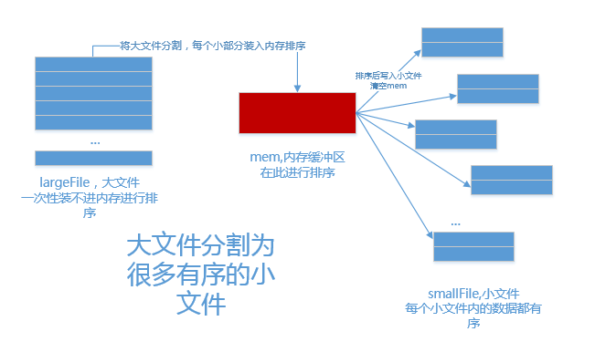
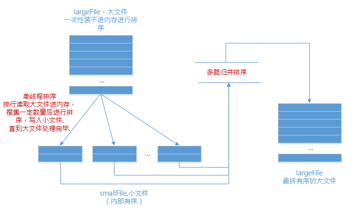
sort函数内部是什么
sort函数内部使用快速排序算法实现，它的时间复杂度为O(nlogn)，是一种非常高效的排序算法。
快排的原理
- 选择一个基准元素。
- 将小于等于基准元素的元素移动到数组左边，大于基准元素的元素移动到数组右边，这个过程称为划分。
- 递归地对划分后的左右两个子序列进行排序。
但是仔细想想还可以继续回答⬇️
在实际实现中，sort函数还有一些优化，例如：
- 当排序的元素个数小于一定阈值时，使用插入排序算法。
- 当出现大量重复元素时，使用三向划分快速排序算法。
为什么选快排
默认它的分布是比较随机的那种分布，然后快排在比较随机的分布上，表现的比较好，速度比较快
表内指定的区间反转
9. BitMap原理是什么？
Bitmap 的基本思想是用一个二进制位来表示一个元素的某种状态。例如，要表示一个包含n个元素的集合，就创建一个长度为n的二进制数组，数组中的每个位对应集合中的一个元素。如果元素存在于集合中，对应的位就设置为1；如果元素不存在，对应的位就设置为0。
优点：
- 空间效率高：对于大量的元素，如果使用传统的数据结构（如数组、链表等）来存储，可能需要占用大量的空间。而 Bitmap 只需要一个位数组，每个元素只占用一位，因此可以大大节省空间。
-
查询速度快：由于 Bitmap 是基于位操作的，查询一个元素是否存在只需要访问对应的位，时间复杂度为
O(1)，非常适合快速判断大量元素的存在性。
缺点
-
只适用于元素范围较小的情况：如果元素的范围非常大，比如要表示
1到10^9的所有整数，那么 Bitmap 需要一个长度为10^9位的数组，这将占用大量的内存。 - 不支持动态扩展：Bitmap 的大小在初始化时就已经确定，如果需要添加新的元素，可能需要重新分配更大的空间，并进行数据迁移。
15. 手撕算法
- 算法是最长不重复子串
7. 手撕算法：快速排序
使用 Java 实现的快速排序算法，代码如下：
public class QuickSort {
/**
* 快速排序的主方法，对外提供排序接口
* @param arr 待排序的数组
*/
public static void quickSort(int[] arr) {
if (arr == null || arr.length <= 1) {
return; // 数组为空或长度小于等于1无需排序
}
quickSort(arr, 0, arr.length - 1);
}
/**
* 快速排序的递归方法，对指定区间的元素进行排序
* @param arr 待排序的数组
* @param left 左边界索引
* @param right 右边界索引
*/
private static void quickSort(int[] arr, int left, int right) {
if (left < right) {
// 分区操作，获取基准值的最终位置
int pivotIndex = partition(arr, left, right);
// 递归排序基准值左边的子数组
quickSort(arr, left, pivotIndex - 1);
// 递归排序基准值右边的子数组
quickSort(arr, pivotIndex + 1, right);
}
}
/**
* 分区操作，选择最右边的元素作为基准值，将数组分为两部分
* 左边部分元素都小于等于基准值，右边部分元素都大于基准值
* @param arr 待分区的数组
* @param left 左边界索引
* @param right 右边界索引（基准值所在位置）
* @return 基准值的最终位置
*/
private static int partition(int[] arr, int left, int right) {
int pivot = arr[right]; // 选择最右边的元素作为基准值
int i = left - 1; // 记录小于等于基准值的元素的右边界
// 遍历当前分区的所有元素
for (int j = left; j < right; j++) {
if (arr[j] <= pivot) {
// 当前元素小于等于基准值时，将其交换到左半部分
i++;
swap(arr, i, j);
}
}
// 将基准值放到正确的位置
swap(arr, i + 1, right);
return i + 1; // 返回基准值的最终位置
}
/**
* 交换数组中两个索引位置的元素
* @param arr 数组
* @param i 第一个元素的索引
* @param j 第二个元素的索引
*/
private static void swap(int[] arr, int i, int j) {
int temp = arr[i];
arr[i] = arr[j];
arr[j] = temp;
}
/**
* 测试快速排序功能
*/
public static void main(String[] args) {
int[] arr = {3, 6, 8, 10, 1, 2, 1};
System.out.println("排序前的数组：");
for (int num : arr) {
System.out.print(num + " ");
}
quickSort(arr);
System.out.println("\n排序后的数组：");
for (int num : arr) {
System.out.print(num + " ");
}
}
}
代码说明：
- 快速排序的基本思想：选择一个基准值，将数组分为两部分，左边部分元素都小于等于基准值，右边部分元素都大于基准值，然后分别对左右两部分递归进行排序。
- 分区操作：是快速排序的核心，这里采用的是 Lomuto 分区方案，选择最右边的元素作为基准值。
- 递归处理：通过递归调用，不断缩小排序区间，直到每个子数组都有序。
- 时间复杂度：平均情况下为 O (n log n)，最坏情况下为 O (n²)，但通过合理选择基准值可以有效避免最坏情况。
- 空间复杂度：由于递归调用栈的深度，平均情况下为 O (log n)，最坏情况下为 O (n)。
- 算法题：一个长度为n的数组找出最大的m个数
从一堆数中查找最大的10个数，应该怎么找？
对于top K类问题，如果是大数据的场景下，通常比较好的方案是分治+hash+小顶堆：
- 先将数据集按照Hash方法分解成多个小数据集
- 然后用小顶堆求出每个数据集中最大的K个数
- 最后在所有top K中求出最终的top K。
手撕算法
- 手撕：二叉树的最大路径和（看到hard就怂了，面试官说思路对了，时间不够了没撕出来，回去好好看看）
- 轮转数组
用栈实现队列
可以用 2 个栈来实现队列，其中一个栈用于入队操作，另一个栈用于出队操作：
class MyQueue {
private Stack<Integer> stack1; // 第一个栈用于入队
private Stack<Integer> stack2; // 第二个栈用于出队
public MyQueue() {
stack1 = new Stack<>();
stack2 = new Stack<>();
}
public void push(int x) {
stack1.push(x);
}
public int pop() {
if (stack2.isEmpty()) { // 如果第二个栈为空，将第一个栈中的元素依次弹出并压入第二个栈
while (!stack1.isEmpty()) {
stack2.push(stack1.pop());
}
}
return stack2.pop(); // 然后从第二个栈弹出元素
}
public int peek() {
if (stack2.isEmpty()) {
while (!stack1.isEmpty()) {
stack2.push(stack1.pop());
}
}
return stack2.peek(); // 查看第二个栈的栈顶元素
}
public boolean empty() {
return stack1.isEmpty() && stack2.isEmpty(); // 判断队列是否为空
}
}
数组和链表区别是什么？
- 访问效率：数组可以通过索引直接访问任何位置的元素，访问效率高，时间复杂度为O(1)，而链表需要从头节点开始遍历到目标位置，访问效率较低，时间复杂度为O(n)。
- 插入和删除操作效率：数组插入和删除操作可能需要移动其他元素，时间复杂度为O(n)，而链表只需要修改指针指向，时间复杂度为O(1)。
- 缓存命中率：由于数组元素在内存中连续存储，可以提高CPU缓存的命中率，而链表节点不连续存储，可能导致CPU缓存的命中率较低，频繁的缓存失效会影响性能。
- 应用场景：数组适合静态大小、频繁访问元素的场景，而链表适合动态大小、频繁插入、删除操作的场景
为什么数组查询的复杂度为O(1)？
数组必须要内存中一块连续的空间，并且数组中必须存放相同的数据类型。 比如我们创建一个长度为 10，数据类型为整型的数组，在内存中的地址是从 1000 开始，那么它在内存中的存储格式如下。
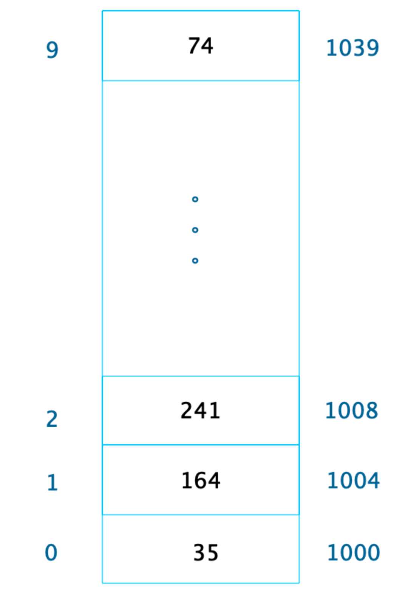
由于每个整型数据占据 4 个字节的内存空间，因此整个数组的内存空间地址是 1000～1039，根据这个，我们就可以轻易算出数组中每个数据的内存下标地址。 利用这个特性，我们只要知道了数组下标，也就是数据在数组中的位置，比如下标 2，就可以计算得到这个数据在内存中的位置 1008，从而对这个位置的数据 241 进行快速读写访问，时间复杂度为 O(1)。
手撕算法
- 合并k个有序链表（面试官说给我出个简单题）
算法
- 手撕链表重排
你熟悉的两个排序算法，并说明其时间空间复杂度
快速排序
快速排序是一种不稳定排序，它的时间复杂度为O(nlgn)，最坏情况为O(n2)，空间复杂度为O(nlgn)
快排使用了分治策略的思想，所谓分治，顾名思义，就是分而治之，将一个复杂的问题，分成两个或多个相似的子问题，在把子问题分成更小的子问题，直到更小的子问题可以简单求解，求解子问题，则原问题的解则为子问题解的合并。快排的过程简单的说只有三步：
- 首先从序列中选取一个数作为基准数
- 将比这个数大的数全部放到它的右边，把小于或者等于它的数全部放到它的左边 （一次快排 partition）
- 然后分别对基准的左右两边重复以上的操作，直到数组完全排序
具体按以下步骤实现：
- 1，创建两个指针分别指向数组的最左端以及最右端
- 2，在数组中任意取出一个元素作为基准
- 3，左指针开始向右移动，遇到比基准大的停止
- 4，右指针开始向左移动，遇到比基准小的元素停止，交换左右指针所指向的元素
- 5，重复3，4，直到左指针超过右指针，此时，比基准小的值就都会放在基准的左边，比基准大的值会出现在基准的右边
- 6，然后分别对基准的左右两边重复以上的操作，直到数组完全排序
注意这里的基准该如何选择？最简单的一种做法是每次都是选择最左边的元素作为基准，但这对几乎已经有序的序列来说，并不是最好的选择，它将会导致算法的最坏表现。还有一种做法，就是选择中间的数或通过 Math.random() 来随机选取一个数作为基准。
public class QuickSort {
// 快速排序算法
public void quickSort(int[] arr, int low, int high) {
if (low < high) {
int pi = partition(arr, low, high);
// 递归排序左半部分
quickSort(arr, low, pi - 1);
// 递归排序右半部分
quickSort(arr, pi + 1, high);
}
}
// 划分函数，用于找到基准元素的正确位置
int partition(int[] arr, int low, int high) {
int pivot = arr[high]; // 选择最后一个元素作为基准
int i = low - 1; // 初始化较小元素的索引
for (int j = low; j < high; j++) {
if (arr[j] < pivot) {
i++;
// 交换元素
int temp = arr[i];
arr[i] = arr[j];
arr[j] = temp;
}
}
// 将基准元素放到正确的位置
int temp = arr[i + 1];
arr[i + 1] = arr[high];
arr[high] = temp;
return i + 1; // 返回基准元素的位置
}
public static void main(String[] args) {
int[] arr = {10, 7, 8, 9, 1, 5};
QuickSort quickSort = new QuickSort();
quickSort.quickSort(arr, 0, arr.length - 1);
System.out.println("Sorted array:");
for (int value : arr) {
System.out.print(value + " ");
}
}
}
冒泡排序算法
冒泡排序：通过相邻元素的比较和交换，每次将最大（或最小）的元素逐步“冒泡”到最后（或最前）
- 冒泡排序的最好时间复杂度出现在以下情况：当待排序数组已经有序时，即每个元素都比其前面的元素小，那么在第一次遍历数组时就可以确定排序已经完成，因此时间复杂度为O(n)。
- 冒泡排序的时间复杂度为O(n^2)。因为在排序过程中，需要进行多次遍历和元素交换，而每次遍历都需要比较相邻的元素并决定是否进行交换，这种操作需要花费O(n)的时间。因此，冒泡排序的时间复杂度通常为O(n^2)。
public class BubbleSort {
// 冒泡排序算法
public void bubbleSort(int[] arr) {
int n = arr.length;
// 外层循环控制比较轮数
for (int i = 0; i < n - 1; i++) {
// 内层循环进行两两比较并交换
for (int j = 0; j < n - i - 1; j++) {
if (arr[j] > arr[j + 1]) {
// 交换两个元素
int temp = arr[j];
arr[j] = arr[j + 1];
arr[j + 1] = temp;
}
}
}
}
public static void main(String[] args) {
int[] arr = {64, 34, 25, 12, 22, 11, 90};
BubbleSort bubbleSort = new BubbleSort();
bubbleSort.bubbleSort(arr);
System.out.println("Sorted array:");
for (int value : arr) {
System.out.print(value + " ");
}
}
}
-
算法：K个一组反转链表
算法题
- 无重复最长子串（leetcode 原题）
因为项目写了 raft 分布式 kv 的项目，问了一下 raft 算法相关的问题
- 一致性是怎么保证的
- leader选举过程是怎么样的？
- leader崩溃后重新加入如何保证日志一致
- 给了一道go相关题目，看打印出什么，关于append的
- hard算法：抽五星卡概率，给了个思路，没写出来，目测gg了
用double check实现单例模式
- 使用volatile关键字修饰 instance，防止指令重排序
- 加上同步代码块 保证线程安全（比同步方法高效，因为同步方法每次获取对象都会执行，同步代码块只在第一次获取对象时会执行，后期会直接返回对象信息）
public class SingleTon {
// volatile 关键字修饰变量 防止指令重排序
private static volatile SingleTon instance = null;
private SingleTon(){}
public static SingleTon getInstance(){
if(instance == null){
//同步代码块 只有在第一次获取对象的时候会执行到 ，第二次及以后访问时 instance变量均非null故不会往下执行了 直接返回啦
synchronized(SingleTon.class){
if(instance == null){
instance = new SingleTon();
}
}
}
return instance;
}
}
层序换行遍历二叉树
层序遍历二叉树的思路是使用队列来实现。首先将根节点入队，然后进入循环，每次循环首先获取当前队列的大小，表示当前层的节点个数，然后依次取出这些节点，输出它们的值，并将它们的子节点（如果存在）依次入队。这样可以保证按层级顺序遍历二叉树，并在每一层输出换行符以区分层级。
class Solution {
public List<List<Integer>> levelOrder(TreeNode root) {
List<List<Integer>> ret = new ArrayList<List<Integer>>();
if (root == null) {
return ret;
}
Queue<TreeNode> queue = new LinkedList<TreeNode>();
queue.offer(root);
while (!queue.isEmpty()) {
List<Integer> level = new ArrayList<Integer>();
int currentLevelSize = queue.size();
for (int i = 1; i <= currentLevelSize; ++i) {
TreeNode node = queue.poll();
level.add(node.val);
if (node.left != null) {
queue.offer(node.left);
}
if (node.right != null) {
queue.offer(node.right);
}
}
ret.add(level);
}
return ret;
}
}
写个快排排序
快排使用了分治策略的思想，所谓分治，顾名思义，就是分而治之，将一个复杂的问题，分成两个或多个相似的子问题，在把子问题分成更小的子问题，直到更小的子问题可以简单求解，求解子问题，则原问题的解则为子问题解的合并。快排的过程简单的说只有三步：
- 首先从序列中选取一个数作为基准数
-
将比这个数大的数全部放到它的右边，把小于或者等于它的数全部放到它的左边 （一次快排
partition） - 然后分别对基准的左右两边重复以上的操作，直到数组完全排序
具体按以下步骤实现：
- 1，创建两个指针分别指向数组的最左端以及最右端
- 2，在数组中任意取出一个元素作为基准
- 3，左指针开始向右移动，遇到比基准大的停止
- 4，右指针开始向左移动，遇到比基准小的元素停止，交换左右指针所指向的元素
- 5，重复3，4，直到左指针超过右指针，此时，比基准小的值就都会放在基准的左边，比基准大的值会出现在基准的右边
- 6，然后分别对基准的左右两边重复以上的操作，直到数组完全排序
注意这里的基准该如何选择？最简单的一种做法是每次都是选择最左边的元素作为基准，但这对几乎已经有序的序列来说，并不是最好的选择，它将会导致算法的最坏表现。还有一种做法，就是选择中间的数或通过 Math.random() 来随机选取一个数作为基准。
代码实现：
public class QuickSort {
// 快速排序算法
public void quickSort(int[] arr, int low, int high) {
if (low < high) {
int pi = partition(arr, low, high);
// 递归排序左半部分
quickSort(arr, low, pi - 1);
// 递归排序右半部分
quickSort(arr, pi + 1, high);
}
}
// 划分函数，用于找到基准元素的正确位置
int partition(int[] arr, int low, int high) {
int pivot = arr[high]; // 选择最后一个元素作为基准
int i = low - 1; // 初始化较小元素的索引
for (int j = low; j < high; j++) {
if (arr[j] < pivot) {
i++;
// 交换元素
int temp = arr[i];
arr[i] = arr[j];
arr[j] = temp;
}
}
// 将基准元素放到正确的位置
int temp = arr[i + 1];
arr[i + 1] = arr[high];
arr[high] = temp;
return i + 1; // 返回基准元素的位置
}
public static void main(String[] args) {
int[] arr = {10, 7, 8, 9, 1, 5};
QuickSort quickSort = new QuickSort();
quickSort.quickSort(arr, 0, arr.length - 1);
System.out.println("Sorted array:");
for (int value : arr) {
System.out.print(value + " ");
}
}
}
- 给定链表 1 -> 2 -> ... -> n-1 -> n，使用 O(1) 空间复杂度使其变为 1 -> n -> 2 -> n-1 -> ...
- 只记得有关滑动窗口，应该是力扣 TOP 100 的
算法题目是反转链表，只给了main函数要手动写输入输出，用到了list但这个IDE不让我加头文件，写完以后一直报错导致运行不起来，最后讲了一下思路。思路：在遍历链表时，将当前节点的 next 指针改为指向前一个节点。由于节点没有引用其前一个节点，因此必须事先存储其前一个节点。在更改引用之前，还需要存储后一个节点。最后返回新的头引用。
class Solution {
public ListNode reverseList(ListNode head) {
ListNode prev = null;
ListNode curr = head;
while (curr != null) {
ListNode next = curr.next;
curr.next = prev;
prev = curr;
curr = next;
}
return prev;
}
}
复杂度分析：
- 时间复杂度：O(n)，其中 n 是链表的长度。需要遍历链表一次。
- 空间复杂度：O(1)。
- 无重复字符的最长子串
10. 算法：逆序输出Z型遍历二叉树
要实现逆序输出 Z 型遍历二叉树，我们需要先理解什么是 Z 型遍历（也称为之字形遍历）：即二叉树的节点按照层次遍历，但奇数层从左到右，偶数层从右到左（或相反），然后将结果逆序输出。
下面是实现这一功能的 Java 代码，使用了队列来实现层次遍历，并通过标志位控制每层的遍历方向：
import java.util.*;
// 二叉树节点定义
class TreeNode {
int val;
TreeNode left;
TreeNode right;
TreeNode(int x) {
val = x;
left = null;
right = null;
}
}
publicclass ZigzagReverseTraversal {
public static void main(String[] args) {
// 构建一个示例二叉树
TreeNode root = new TreeNode(3);
root.left = new TreeNode(9);
root.right = new TreeNode(20);
root.right.left = new TreeNode(15);
root.right.right = new TreeNode(7);
// 执行逆序Z型遍历
List<List<Integer>> result = zigzagLevelOrderReverse(root);
// 输出结果
System.out.println("逆序Z型遍历结果:");
for (List<Integer> level : result) {
System.out.println(level);
}
}
/**
* 逆序输出Z型遍历二叉树
* @param root 二叉树根节点
* @return 逆序Z型遍历结果
*/
publicstatic List<List<Integer>> zigzagLevelOrderReverse(TreeNode root) {
List<List<Integer>> result = new ArrayList<>();
if (root == null) {
return result;
}
// 用于层次遍历的队列
Queue<TreeNode> queue = new LinkedList<>();
queue.add(root);
// 控制当前层的遍历方向，true表示从左到右
boolean leftToRight = true;
// 进行层次遍历
while (!queue.isEmpty()) {
int levelSize = queue.size();
List<Integer> currentLevel = new ArrayList<>();
for (int i = 0; i < levelSize; i++) {
TreeNode node = queue.poll();
currentLevel.add(node.val);
// 将下一层的节点加入队列
if (node.left != null) {
queue.add(node.left);
}
if (node.right != null) {
queue.add(node.right);
}
}
// 如果当前层需要从右到左，则反转当前层的元素
if (!leftToRight) {
Collections.reverse(currentLevel);
}
// 将当前层的结果加入总结果
result.add(currentLevel);
// 切换下一层的遍历方向
leftToRight = !leftToRight;
}
// 逆序输出整个结果
Collections.reverse(result);
return result;
}
}
代码解析：
-
首先定义了二叉树节点类
TreeNode，包含节点值和左右子节点引用 -
核心方法
zigzagLevelOrderReverse的实现思路：
- 使用队列实现二叉树的层次遍历
-
用
leftToRight标志控制每层的遍历方向 - 对于需要从右到左遍历的层，收集完节点后进行反转
- 所有层遍历完成后，对整个结果列表进行逆序操作
- 最终返回逆序后的 Z 型遍历结果
示例中构建的二叉树结构如下：
3
/ \
9 20
/ \
15 7
- 正常 Z 型遍历结果为：[[3], [20, 9], [15, 7]]
- 逆序 Z 型遍历结果为：[[15, 7], [20, 9], [3]]
这种实现方式的时间复杂度为 O (n)，其中 n 是二叉树的节点数，空间复杂度也是 O (n)，主要用于存储队列和结果列表。
- 手撕：反转链表、最大子数组和
- 手撕：最大子数组和
- 取数组中最小的K个元素(使用了堆排序，问怎么优化堆的大小)
- 卖出股票的最佳时机
算法题：反转链表
用三个指针很快写完，面试官问我可不可以用两个指针，我不知道，我又用头插法写了一遍。
之后让我对比了这两个方法。
感觉面试官像是已经决定要挂我了随便出的算法题走个流程。
-
手撕：接雨水
手撕：合并两个有序链表
知道哪些排序算法，时间复杂度

- 冒泡排序：通过相邻元素的比较和交换，每次将最大（或最小）的元素逐步“冒泡”到最后（或最前）。时间复杂度：最好情况下O(n)，最坏情况下O(n^2)，平均情况下O(n^2)。，空间复杂度：O(1)。
- 插入排序：将待排序元素逐个插入到已排序序列的合适位置，形成有序序列。时间复杂度：最好情况下O(n)，最坏情况下O(n^2)，平均情况下O(n^2)，空间复杂度：O(1)。
- 选择排序：通过不断选择未排序部分的最小（或最大）元素，并将其放置在已排序部分的末尾（或开头）。时间复杂度：最好情况下O(n^2)，最坏情况下O(n^2)，平均情况下O(n^2)。空间复杂度：O(1)。
- 快速排序：通过选择一个基准元素，将数组划分为两个子数组，使得左子数组的元素都小于（或等于）基准元素，右子数组的元素都大于（或等于）基准元素，然后对子数组进行递归排序。时间复杂度：最好情况下O(nlogn)，最坏情况下O(n^2)，平均情况下O(nlogn)。空间复杂度：最好情况下O(logn)，最坏情况下O(n)。
- 归并排序：将数组不断分割为更小的子数组，然后将子数组进行合并，合并过程中进行排序。时间复杂度：最好情况下O(nlogn)，最坏情况下O(nlogn)，平均情况下O(nlogn)。空间复杂度：O(n)。
- 堆排序：通过将待排序元素构建成一个最大堆（或最小堆），然后将堆顶元素与末尾元素交换，再重新调整堆，重复该过程直到排序完成。时间复杂度：最好情况下O(nlogn)，最坏情况下O(nlogn)，平均情况下O(nlogn)。空间复杂度：O(1)。
归并排序和快速排序的使用场景
- 归并排序是稳定排序算法，适合排序稳定的场景；
- 快速排序是不稳定排序算法，不适合排序稳定的场景，快速排序是目前基于比较的内部排序中被认为是最好的方法，当待排序的关键字是随机分布时，快速排序的平均时间最短；
排序稳定是什么意思？

排序稳定指的是在排序过程中，对于具有相同排序关键字的元素，在排序后它们的相对位置保持不变。
换句话说，如果在排序前两个元素 A 和 B 的值相等，并且 A 在 B 的前面，那么在排序后 A 仍然在 B 的前面，这样的排序就是稳定排序。稳定排序保持了相同元素之间的顺序关系，适用于需要保持原始顺序的场景。
稳定和不稳定排序算法有什么特点？
稳定排序算法的特点：
- 相同元素的相对位置不会改变，排序后仍然保持原始顺序。
- 适用于需要保持元素间相对顺序关系的场景，如按照年龄排序后按姓名排序。
不稳定排序算法的特点：
- 相同元素的相对位置可能会改变，排序后不保证原始顺序。
- 可能会更快，但不适用于需要保持元素间相对顺序关系的场景。
手撕：字符串乘法，输出 2 的 1000 次方
布隆过滤器怎么设计？时间复杂度？
在开发过程中，经常要判断一个元素是否在一个集合中。假设你现在要给项目添加IP黑名单功能，此时你手上有大约 1亿个恶意IP的数据集，有一个IP发起请求，你如何判断这个IP在不在你的黑名单中？
类似这种问题用Java自己的Collection和Map很难处理，因为它们存储元素本身，会造成内存不足，而我们只关心元素存不存在，对于元素的值我们并不关心，具体值是什么并不重要。
「布隆过滤器」可以用来解决类似的问题，具有运行快速，内存占用小的特点，它是一个保存了很长的二级制向量，同时结合 Hash 函数实现的。而高效插入和查询的代价就是，它是一个基于概率的数据结构，只能告诉我们一个元素绝对不在集合内，对于存在集合内的元素有一定的误判率。
布隆过滤器中总是会存在误判率，因为哈希碰撞是不可能百分百避免的。布隆过滤器对这种误判率称之为「假阳性概率」，即：False Positive Probability，简称为 fpp。在实践中使用布隆过滤器时可以自己定义一个 fpp，然后就可以根据布隆过滤器的理论计算出需要多少个哈希函数和多大的位数组空间。需要注意的是这个 fpp 不能定义为 100%，因为无法百分保证不发生哈希碰撞。
下图表示向布隆过滤器中添加元素 www.123.com 和 www.456.com 的过程，它使用了 func1 和 func2 两个简单的哈希函数。 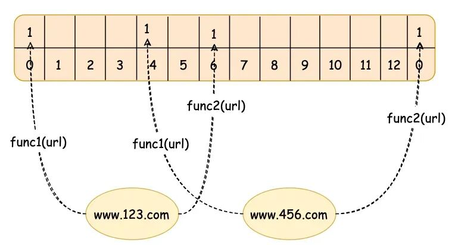
- 初始化：当我们创建一个布隆过滤器时，我们首先创建一个全由0组成的位数组（bit array)。同时，我们还需选择几个独立的哈希函数，每个函数都可以将集合中的元素映射到这个位数组的某个位置。
- 添加元素：在布隆过滤器中添加一个元素时，我们会将此元素通过所有的哈希函数进行映射，得到在位数组中的几个位置，然后将这些位置标记为1。
- 查询元素：如果我们要检查一个元素是否在集合中，我们同样使用这些哈希函数将元素映射到位数组中的几个位置，如果所有的位置都被标记为1，那么我们就可以说该元素可能在集合中。如果有任何一个位置不为1，那么该元素肯定不在集合中。
通过其原理可以知道，我们可以提高数组长度以及 hash 计算次数来降低误报率，但是相应的 CPU、内存的消耗也会相应地提高，会增加存储和计算的开销。因此，布隆过滤器的使用需要在误判率和性能之间进行权衡。布隆过滤器有以下两个特点：
- 只要返回数据不存在，则肯定不存在。
- 返回数据存在，不一定存在。
布隆过滤器的误判率主要来源于「哈希碰撞」。因为位数组的大小有限，不同的元素可能会被哈希到相同的位置，导致即使某个元素并未真正被加入过滤器，也可能因为其他已经存在的元素而让所有哈希函数映射的位都变为了1，从而误判为存在。
这就是布隆过滤器的“假阳性”错误。在有限的数组长度中存放大量的数据，即便是再完美的 Hash 算法也会有冲突，所以有可能两个完全不同的 A、B 两个数据最后定位到的位置是一模一样的。这时拿 B 进行查询时那自然就是误报了。
布隆过滤器的时间复杂度和空间复杂度：对于一个 m（比特位个数）和 k（哈希函数个数）值确定的布隆过滤器，添加和判断操作的时间复杂度都是 O(k)，这意味着每次你想要插入一个元素或者查询一个元素是否在集合中，只需要使用 k 个哈希函数对该元素求值，然后将对应的比特位标记或者检查对应的比特位即可。
- Leetcode 153 寻找旋转排序数组的最小值
布隆过滤器怎么设计？时间复杂度？
在开发过程中，经常要判断一个元素是否在一个集合中。假设你现在要给项目添加IP黑名单功能，此时你手上有大约 1亿个恶意IP的数据集，有一个IP发起请求，你如何判断这个IP在不在你的黑名单中？
类似这种问题用Java自己的Collection和Map很难处理，因为它们存储元素本身，会造成内存不足，而我们只关心元素存不存在，对于元素的值我们并不关心，具体值是什么并不重要。
「布隆过滤器」可以用来解决类似的问题，具有运行快速，内存占用小的特点，它是一个保存了很长的二级制向量，同时结合 Hash 函数实现的。而高效插入和查询的代价就是，它是一个基于概率的数据结构，只能告诉我们一个元素绝对不在集合内，对于存在集合内的元素有一定的误判率。
布隆过滤器中总是会存在误判率，因为哈希碰撞是不可能百分百避免的。布隆过滤器对这种误判率称之为「假阳性概率」，即：False Positive Probability，简称为 fpp。在实践中使用布隆过滤器时可以自己定义一个 fpp，然后就可以根据布隆过滤器的理论计算出需要多少个哈希函数和多大的位数组空间。需要注意的是这个 fpp 不能定义为 100%，因为无法百分保证不发生哈希碰撞。
下图表示向布隆过滤器中添加元素 www.123.com 和 www.456.com 的过程，它使用了 func1 和 func2 两个简单的哈希函数。
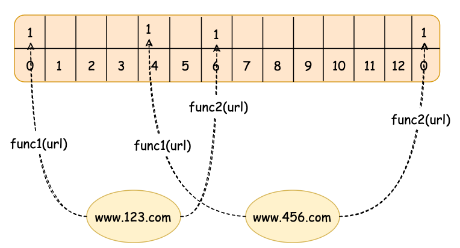
其基本原理如下：- 初始化：当我们创建一个布隆过滤器时，我们首先创建一个全由0组成的位数组（bit array)。同时，我们还需选择几个独立的哈希函数，每个函数都可以将集合中的元素映射到这个位数组的某个位置。
- 添加元素：在布隆过滤器中添加一个元素时，我们会将此元素通过所有的哈希函数进行映射，得到在位数组中的几个位置，然后将这些位置标记为1。
- 查询元素：如果我们要检查一个元素是否在集合中，我们同样使用这些哈希函数将元素映射到位数组中的几个位置，如果所有的位置都被标记为1，那么我们就可以说该元素可能在集合中。如果有任何一个位置不为1，那么该元素肯定不在集合中。
通过其原理可以知道，我们可以提高数组长度以及 hash 计算次数来降低误报率，但是相应的 CPU、内存的消耗也会相应地提高，会增加存储和计算的开销。因此，布隆过滤器的使用需要在误判率和性能之间进行权衡。布隆过滤器有以下两个特点：
- 只要返回数据不存在，则肯定不存在。
- 返回数据存在，不一定存在。
布隆过滤器的误判率主要来源于「哈希碰撞」。因为位数组的大小有限，不同的元素可能会被哈希到相同的位置，导致即使某个元素并未真正被加入过滤器，也可能因为其他已经存在的元素而让所有哈希函数映射的位都变为了1，从而误判为存在。这就是布隆过滤器的“假阳性”错误。在有限的数组长度中存放大量的数据，即便是再完美的 Hash 算法也会有冲突，所以有可能两个完全不同的 A、B 两个数据最后定位到的位置是一模一样的。这时拿 B 进行查询时那自然就是误报了。
布隆过滤器的时间复杂度和空间复杂度：对于一个 m（比特位个数）和 k（哈希函数个数）值确定的布隆过滤器，添加和判断操作的时间复杂度都是 O(k)，这意味着每次你想要插入一个元素或者查询一个元素是否在集合中，只需要使用 k 个哈希函数对该元素求值，然后将对应的比特位标记或者检查对应的比特位即可。
反转字符串中的单词 III
开辟一个新字符串。然后从头到尾遍历原字符串，直到找到空格为止，此时找到了一个单词，并能得到单词的起止位置。随后，根据单词的起止位置，可以将该单词逆序放到新字符串当中。如此循环多次，直到遍历完原字符串，就能得到翻转后的结果。
class Solution {
public String reverseWords(String s) {
StringBuffer ret = new StringBuffer();
int length = s.length();
int i = 0;
while (i < length) {
int start = i;
while (i < length && s.charAt(i) != ' ') {
i++;
}
for (int p = start; p < i; p++) {
ret.append(s.charAt(start + i - 1 - p));
}
while (i < length && s.charAt(i) == ' ') {
i++;
ret.append(' ');
}
}
return ret.toString();
}
}
- 时间复杂度：O(N)，其中 N 为字符串的长度。原字符串中的每个字符都会在 O(1) 的时间内放入新字符串中。
- 空间复杂度：O(N)。我们开辟了与原字符串等大的空间。
算法题
10w个字的文章,都是小写字母,求其中出现次数最多的字母
答：统计词频+排序+输出
算法：151.反转字符串中的单词
双端队列支持从队列头部插入的方法，因此我们可以沿着字符串一个一个单词处理，然后将单词压入队列的头部，再将队列转成字符串即可。
class Solution {
public String reverseWords(String s) {
int left = 0, right = s.length() - 1;
// 去掉字符串开头的空白字符
while (left <= right && s.charAt(left) == ' ') {
++left;
}
// 去掉字符串末尾的空白字符
while (left <= right && s.charAt(right) == ' ') {
--right;
}
Deque<String> d = new ArrayDeque<String>();
StringBuilder word = new StringBuilder();
while (left <= right) {
char c = s.charAt(left);
if ((word.length() != 0) && (c == ' ')) {
// 将单词 push 到队列的头部
d.offerFirst(word.toString());
word.setLength(0);
} else if (c != ' ') {
word.append(c);
}
++left;
}
d.offerFirst(word.toString());
return String.join(" ", d);
}
}
复杂度分析：时间复杂度：O(n)，空间复杂度：O(n)
算法
- 最长递增子序列
链表判断相交
public ListNode getIntersectionNode(ListNode headA, ListNode headB) {
if (headA == null || headB == null) return null;
ListNode pA = headA, pB = headB;
while (pA != pB) {
pA = pA == null ? headB : pA.next;
pB = pB == null ? headA : pB.next;
}
return pA;
}
有序数组1-100，删除一个数，如何查找
可以通过二分查找的方式来查找并删除一个数。
首先，将数组从中间分成两部分，比较中间元素和要查找的数的大小关系。如果中间元素等于要查找的数，则删除该元素并将数组整体向前移动一位。如果中间元素大于要查找的数，则在左半部分继续进行二分查找。如果中间元素小于要查找的数，则在右半部分继续进行二分查找。
重复以上步骤，直到找到要删除的数或者确定该数不在数组中。如果找到要删除的数，则将该数删除并将数组整体向前移动一位。
手撕：最长回文子串
要找到一个字符串的最长回文子串，可以使用多种算法。以下是几种常见的方法：
- 暴力法：检查所有可能的子串，判断每个子串是否是回文。这种方法的时间复杂度是 O(n^3) ，其中 nn 是字符串的长度。
- 动态规划：使用动态规划来减少重复计算。时间复杂度是 O(n2)O(n2) ，空间复杂度也是 O(n^2) 。
- 中心扩展法：从每个可能的中心点向两边扩展，检查是否是回文。时间复杂度是 O(n^2) ，空间复杂度是 O(1) 。
- Manacher算法：一种专门用于解决最长回文子串问题的线性时间算法，时间复杂度是 O(n) 。
下面是使用中心扩展法的Java实现：
//遍历字符串中的每个字符，以该字符为中心向两边扩展，检查是否是回文。
//同时考虑奇数长度和偶数长度的回文。
//记录最长的回文子串的起始和结束位置。
public class LongestPalindromicSubstring {
public String longestPalindrome(String s) {
if (s == null || s.length() < 1) {
return "";
}
int start = 0, end = 0;
for (int i = 0; i < s.length(); i++) {
int len1 = expandAroundCenter(s, i, i); // 奇数长度的回文
int len2 = expandAroundCenter(s, i, i + 1); // 偶数长度的回文
int len = Math.max(len1, len2);
if (len > end - start) {
start = i - (len - 1) / 2;
end = i + len / 2;
}
}
return s.substring(start, end + 1);
}
//从给定的中心点向两边扩展，检查是否是回文。
//返回回文子串的长度。
private int expandAroundCenter(String s, int left, int right) {
while (left >= 0 && right < s.length() && s.charAt(left) == s.charAt(right)) {
left--;
right++;
}
return right - left - 1;
}
public static void main(String[] args) {
LongestPalindromicSubstring solution = new LongestPalindromicSubstring();
String s = "babad";
System.out.println(solution.longestPalindrome(s)); // 输出 "bab" 或 "aba"
}
}
复杂度分析：
- 时间复杂度：O(n^2) ，其中 nn 是字符串的长度。每个字符都可能成为回文的中心，最多需要扩展 nn 次。
- 空间复杂度：O(1)，只使用了常数级别的额外空间。
10. 手撕算法
- 三数之和
- 轮转数组
-
设计一个线程池
- leetcode763.划分字母区间
- 验证对称二叉树
- 岛屿数量
链表和数组有什么区别？
-
访问效率：数组可以通过索引直接访问任何位置的元素，访问效率高，时间复杂度为O(1)，而链表需要从头节点开始遍历到目标位置，访问效率较低，时间复杂度为O(n)。
-
插入和删除操作效率：数组插入和删除操作可能需要移动其他元素，时间复杂度为O(n)，而链表只需要修改指针指向，时间复杂度为O(1)。
-
缓存命中率：由于数组元素在内存中连续存储，可以提高CPU缓存的命中率，而链表节点不连续存储，可能导致CPU缓存的命中率较低，频繁的缓存失效会影响性能。
-
应用场景：数组适合静态大小、频繁访问元素的场景，而链表适合动态大小、频繁插入、删除操作的场景
如何使用两个栈实现队列？
使用两个栈实现队列的方法如下：
-
准备两个栈，分别称为
stackPush和stackPop。 -
当需要入队时，将元素压入
stackPush栈。 -
当需要出队时，先判断
stackPop是否为空，如果不为空，则直接弹出栈顶元素；如果为空，则将stackPush中的所有元素依次弹出并压入stackPop中，然后再从stackPop中弹出栈顶元素作为出队元素。 -
当需要查询队首元素时，同样需要先将
stackPush中的元素转移到stackPop中，然后取出stackPop的栈顶元素但不弹出。 - 通过上述方法，可以实现用两个栈来模拟队列的先进先出（FIFO）特性。
这种方法的时间复杂度为O(1)的入队操作，均摊时间复杂度为O(1)的出队和查询队首元素操作。
以下是使用两个栈实现队列的Java代码示例：
import java.util.Stack;
class MyQueue {
private Stack<Integer> stackPush;
private Stack<Integer> stackPop;
public MyQueue() {
stackPush = new Stack<>();
stackPop = new Stack<>();
}
public void push(int x) {
stackPush.push(x);
}
public int pop() {
if (stackPop.isEmpty()) {
while (!stackPush.isEmpty()) {
stackPop.push(stackPush.pop());
}
}
return stackPop.pop();
}
public int peek() {
if (stackPop.isEmpty()) {
while (!stackPush.isEmpty()) {
stackPop.push(stackPush.pop());
}
}
return stackPop.peek();
}
public boolean empty() {
return stackPush.isEmpty() && stackPop.isEmpty();
}
}
// 测试代码
public class Main {
public static void main(String[] args) {
MyQueue queue = new MyQueue();
queue.push(1);
queue.push(2);
System.out.println(queue.peek()); // 输出 1
System.out.println(queue.pop()); // 输出 1
System.out.println(queue.empty()); // 输出 false
}
}
常见的排序算法说一下？也说一下各个时间复杂度？
- 冒泡排序：通过相邻元素的比较和交换，每次将最大（或最小）的元素逐步“冒泡”到最后（或最前）。时间复杂度：最好情况下O(n)，最坏情况下O(n^2)，平均情况下O(n^2)。，空间复杂度：O(1)。
- 插入排序：将待排序元素逐个插入到已排序序列的合适位置，形成有序序列。时间复杂度：最好情况下O(n)，最坏情况下O(n^2)，平均情况下O(n^2)，空间复杂度：O(1)。
- 选择排序（Selection Sort）：通过不断选择未排序部分的最小（或最大）元素，并将其放置在已排序部分的末尾（或开头）。时间复杂度：最好情况下O(n^2)，最坏情况下O(n^2)，平均情况下O(n^2)，空间复杂度：O(1)。
- 快速排序（Quick Sort）：通过选择一个基准元素，将数组划分为两个子数组，使得左子数组的元素都小于（或等于）基准元素，右子数组的元素都大于（或等于）基准元素，然后对子数组进行递归排序。时间复杂度：最好情况下O(nlogn)，最坏情况下O(n^2)，平均情况下O(nlogn)，空间复杂度：最好情况下O(logn)，最坏情况下O(n)。
- 归并排序（Merge Sort）：将数组不断分割为更小的子数组，然后将子数组进行合并，合并过程中进行排序。时间复杂度：最好情况下O(nlogn)，最坏情况下O(nlogn)，平均情况下O(nlogn)。空间复杂度：O(n)。
- 堆排序（Heap Sort）：通过将待排序元素构建成一个最大堆（或最小堆），然后将堆顶元素与末尾元素交换，再重新调整堆，重复该过程直到排序完成。时间复杂度：最好情况下O(nlogn)，最坏情况下O(nlogn)，平均情况下O(nlogn)。空间复杂度：O(1)。
- 移动窗口
- NC105 二分查找-II
15. 其他
- 实习有什么技术难点？这些问题是怎么解决的？
- 看过什么技术书？
- 区间合并
- 合并两个有序数组
- 反转链表
算法
- 剑指 Offer 26. 树的子结构
- 数组中的第K个最大元素
算法
- lc445 两数相加II
- 判断一棵二叉搜索树
多线程手撕：循环顺序执行三个线程的题，输出ABCABCABCABC…
我们创建三个线程，每个线程负责打印一个字符（A、B、C）。通过使用一个共享的对象作为锁，来控制每个线程的执行顺序。当一个线程打印完它的字符后，它会通知下一个线程开始执行。
public class ThreadOrder {
private static final Object lock = new Object();
private static int current = 1; // 用于控制当前输出的线程
public static void main(String[] args) {
Thread threadA = new Thread(new CharPrinter("A", 1));
Thread threadB = new Thread(new CharPrinter("B", 2));
Thread threadC = new Thread(new CharPrinter("C", 3));
threadA.start();
threadB.start();
threadC.start();
}
static class CharPrinter implements Runnable {
private final String charToPrint;
private final int order;
public CharPrinter(String charToPrint, int order) {
this.charToPrint = charToPrint;
this.order = order;
}
@Override
public void run() {
for (int i = 0; i < 10; i++) { // 输出10次
synchronized (lock) {
while (current != order) {
try {
lock.wait(); // 等待通知
} catch (InterruptedException e) {
Thread.currentThread().interrupt();
}
}
System.out.print(charToPrint); // 打印字符
current++; // 更新当前执行顺序
if (current > 3) {
current = 1; // 重置顺序
}
lock.notifyAll(); // 通知下一个线程
}
}
}
}
}
算法
- 最长公共前缀
- 无重复最长字串
说说快排流程，时间复杂度
快速排序的流程如下：
- 从数组中选择一个基准元素（通常是数组中间位置的元素）。
- 将数组分成两部分，小于基准元素的放在左边，大于基准元素的放在右边。
- 递归地对左右两部分进行快速排序。
快速排序的时间复杂度为O(n log n)，其中n为数组的长度。最坏情况下时间复杂度为O(n^2)，发生在每次选择的基准元素都是最大或最小值时。平均情况下时间复杂度为O(n log n)，效率较高。
快排为什么时间复杂度最差是O（n^2）
主要是因为在每次划分时选择的基准元素不合适导致的。当每次选择的基准元素都是当前子数组中的最大或最小元素时，就会导致每次划分只能减少一个元素，而不是均匀地分成两部分，从而造成时间复杂度达到O(n^2)。
这种情况通常发生在数组已经有序或基本有序的情况下。为了避免最坏情况发生，可以通过随机选择基准元素或者使用三数取中法等策略来提高快速排序的性能。
快排这么强，那冒泡排序还有必要吗？
冒泡排序在一些特定场景下仍然有其优势，比如：
- 对于小规模数据或基本有序的数据，冒泡排序可能比快速排序更简单、更直观。
- 冒泡排序是稳定排序算法，相对于快速排序的不稳定性，在某些情况下可能更适合要求稳定性的场景。
- 冒泡排序是原地排序算法，不需要额外的空间，适合空间复杂度要求严格的场景。
12. 手撕算法
- an >手撕1：图上能同时流向大西洋与太平洋的坐标
- 手撕2：岛屿数量；
算法题：
- String[]，找到字符串数组里的所有字符串的最长前缀。
17. 手撕代码：双线程交替打印 0 ~ 100
可以通过 synchronized 块和 wait()、notify() 方法保证了线程安全，代码如下：
class AlternatePrinting {
privatestaticfinal Object lock = new Object();
privatestaticint number = 0;
privatestaticfinalint MAX_NUMBER = 100;
privatestaticboolean isThread1Turn = true;
public static void main(String[] args) {
Thread thread1 = new Thread(new Printer(true));
Thread thread2 = new Thread(new Printer(false));
thread1.start();
thread2.start();
try {
thread1.join();
thread2.join();
} catch (InterruptedException e) {
e.printStackTrace();
}
}
staticclass Printer implements Runnable {
privatefinalboolean isThread1;
public Printer(boolean isThread1) {
this.isThread1 = isThread1;
}
@Override
public void run() {
while (true) {
synchronized (lock) {
while ((isThread1 &&!isThread1Turn) || (!isThread1 && isThread1Turn)) {
try {
lock.wait();
} catch (InterruptedException e) {
Thread.currentThread().interrupt();
return;
}
}
if (number > MAX_NUMBER) {
break;
}
System.out.println(Thread.currentThread().getName() + ": " + number++);
isThread1Turn =!isThread1Turn;
lock.notify();
}
}
}
}
}
在 Printer 类的 run 方法里，线程先检查是否轮到自己打印，若不是则调用 wait() 方法进入等待状态；轮到自己打印时，打印当前数字，更新轮到的线程状态，接着调用 notify() 方法唤醒另一个线程。当数字超过 100 时，线程停止执行。
一个保存字符串的超大文件，如何判断一个字符串在不在这个文件这种。
- 分治 + hashmap
说几个你懂的排序算法？
class="img1">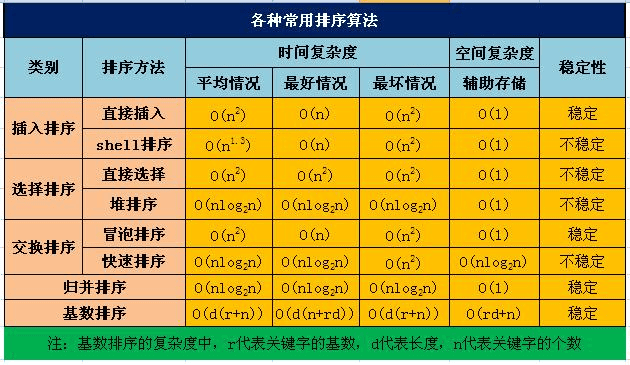
- 冒泡排序：通过相邻元素的比较和交换，每次将最大（或最小）的元素逐步“冒泡”到最后（或最前）。时间复杂度：最好情况下O(n)，最坏情况下O(n^2)，平均情况下O(n^2)。，空间复杂度：O(1)。
- 插入排序：将待排序元素逐个插入到已排序序列的合适位置，形成有序序列。时间复杂度：最好情况下O(n)，最坏情况下O(n^2)，平均情况下O(n^2)，空间复杂度：O(1)。
- 选择排序（Selection Sort）：通过不断选择未排序部分的最小（或最大）元素，并将其放置在已排序部分的末尾（或开头）。时间复杂度：最好情况下O(n^2)，最坏情况下O(n^2)，平均情况下O(n^2)，空间复杂度：O(1)。
- 快速排序（Quick Sort）：通过选择一个基准元素，将数组划分为两个子数组，使得左子数组的元素都小于（或等于）基准元素，右子数组的元素都大于（或等于）基准元素，然后对子数组进行递归排序。时间复杂度：最好情况下O(nlogn)，最坏情况下O(n^2)，平均情况下O(nlogn)，空间复杂度：最好情况下O(logn)，最坏情况下O(n)。
- 归并排序（Merge Sort）：将数组不断分割为更小的子数组，然后将子数组进行合并，合并过程中进行排序。时间复杂度：最好情况下O(nlogn)，最坏情况下O(nlogn)，平均情况下O(nlogn)。空间复杂度：O(n)。
- 排序（Heap Sort）：通过将待排序元素构建成一个最大堆（或最小堆），然后将堆顶元素与末尾元素交换，再重新调整堆，重复该过程直到排序完成。时间复杂度：最好情况下O(nlogn)，最坏情况下O(nlogn)，平均情况下O(nlogn)。空间复杂度：O(1)。
讲一下快排原理
快排使用了分治策略的思想，所谓分治，顾名思义，就是分而治之，将一个复杂的问题，分成两个或多个相似的子问题，在把子问题分成更小的子问题，直到更小的子问题可以简单求解，求解子问题，则原问题的解则为子问题解的合并。
快排的过程简单的说只有三步：
- 首先从序列中选取一个数作为基准数
-
将比这个数大的数全部放到它的右边，把小于或者等于它的数全部放到它的左边 （一次快排
partition） - 然后分别对基准的左右两边重复以上的操作，直到数组完全排序
具体按以下步骤实现：
- 1，创建两个指针分别指向数组的最左端以及最右端
- 2，在数组中任意取出一个元素作为基准
- 3，左指针开始向右移动，遇到比基准大的停止
- 4，右指针开始向左移动，遇到比基准小的元素停止，交换左右指针所指向的元素
- 5，重复3，4，直到左指针超过右指针，此时，比基准小的值就都会放在基准的左边，比基准大的值会出现在基准的右边
- 6，然后分别对基准的左右两边重复以上的操作，直到数组完全排序
注意这里的基准该如何选择？最简单的一种做法是每次都是选择最左边的元素作为基准，但这对几乎已经有序的序列来说，并不是最好的选择，它将会导致算法的最坏表现。还有一种做法，就是选择中间的数或通过 Math.random() 来随机选取一个数作为基准。

代码题
-
用两个栈实现队列
-
十进制转二进制